6-1
第 6 章 开放经济
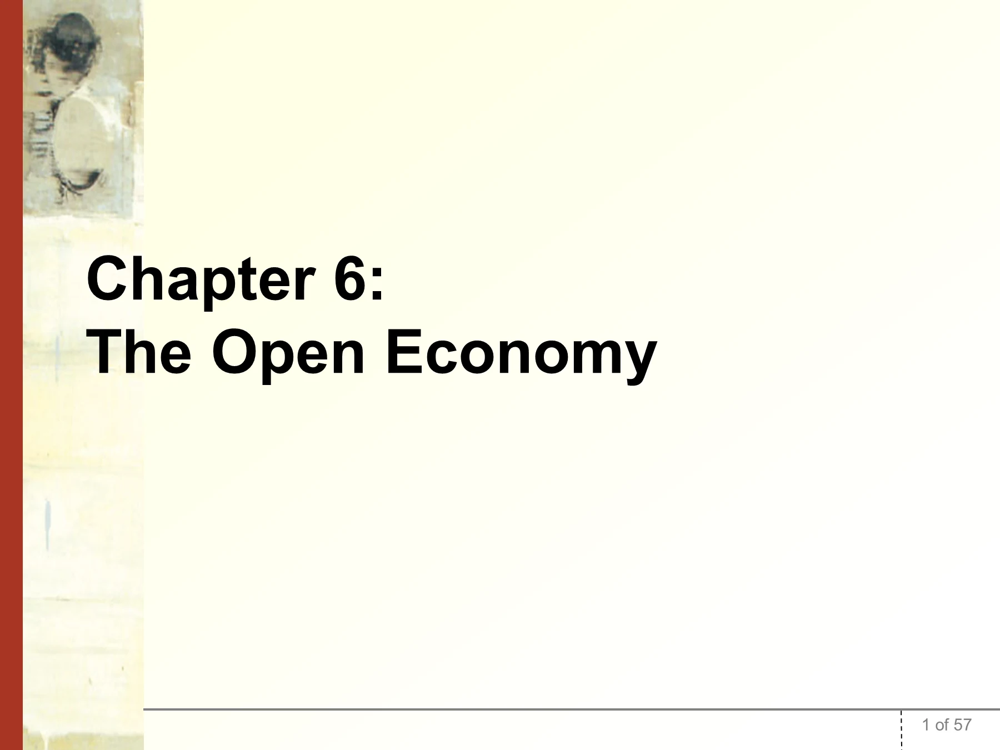
第 6 章
开放经济
The Open Economy · 59 页
| 中文 | English | 页 |
|---|---|---|
| 开放经济 | open economy | 6-4 |
| 净出口 | net exports | 6-6 |
| 贸易余额 | trade balance | 6-6 |
| 贸易顺差 | trade surplus | 6-6 |
| 贸易逆差 | trade deficit | 6-6 |
| 净资本流出 | net capital outflow | 6-9 |
| 净外国投资 | net foreign investment | 6-9 |
| 净贷方 | net lender | 6-9 |
| 净借方 | net borrower | 6-9 |
| 可贷资金 | loanable funds | 6-9 |
| 双赤字 | twin deficits | 6-21 |
| 小型开放经济 | small open economy | 6-13 |
| 完全替代 | perfect substitutes | 6-15 |
| 完全资本流动 | perfect capital mobility | 6-15 |
| 世界利率 | world interest rate | 6-15 |
| 名义汇率 | nominal exchange rate | 6-25 |
| 实际汇率 | real exchange rate | 6-27 |
| 升值 | appreciation | 6-40 |
| 进口配额 | import quota | 6-43 |
| 贸易政策 | trade policy | 6-43 |
| 购买力平价 | purchasing power parity | 6-49 |
| 一价定律 | law of one price | 6-49 |
| 套利 | arbitrage | 6-49 |
| 大国开放经济 | large open economy | 6-55 |
| 符号 | 含义 | 单位 | 页 |
|---|---|---|---|
| Y | 产出（实际 GDP） | 实物单位 | 6-7 |
| C, I, G | 消费、投资、政府购买 | 实物单位 | 6-5 |
| Cd, Cf | 对本国产品 / 对外国产品的消费（I、G 同理） | 实物单位 | 6-5 |
| EX | 出口，等于外国对本国产品的支出 | 实物单位 | 6-5 |
| IM | 进口，等于 Cf+If+Gf | 实物单位 | 6-5 |
| NX | 净出口 = EX − IM，即贸易余额 | 实物单位 | 6-6 |
| S | 国民储蓄 = Y − C − G | 实物单位 | 6-10 |
| S − I | 净资本流出（净外国投资） | 实物单位 | 6-9 |
| r | 本国实际利率 | % | 6-14 |
| r* | 世界实际利率，外生给定 | % | 6-15 |
| rc | 若为封闭经济时的均衡利率 | % | 6-17 |
| e | 名义汇率，外币 / 本币 | 外币 / 本币 | 6-25 |
| ε | 实际汇率，外国商品 / 本国商品 | 无量纲 | 6-27 |
| P | 本国价格水平 | 本币 / 篮子 | 6-28 |
| P* | 外国价格水平 | 外币 / 篮子 | 6-28 |
| G − T | 政府预算赤字 | 实物单位 | 6-20 |

第 6 章
开放经济
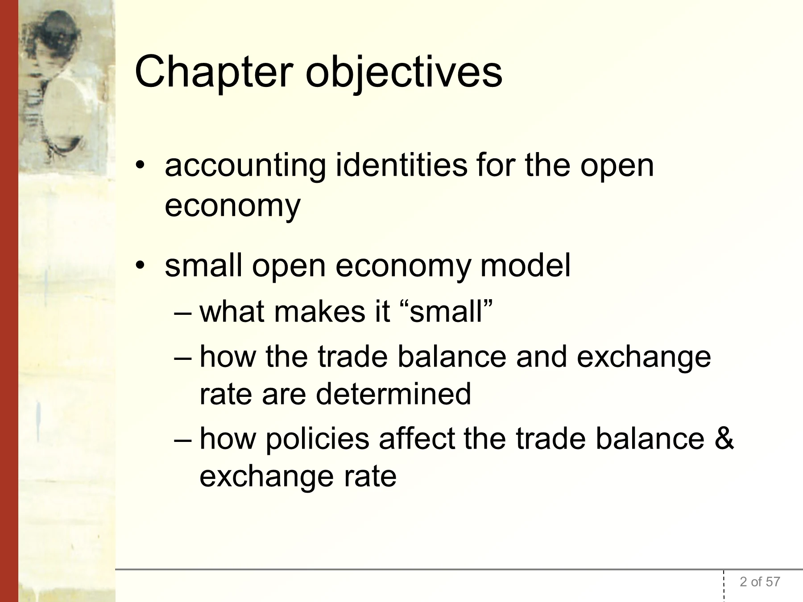
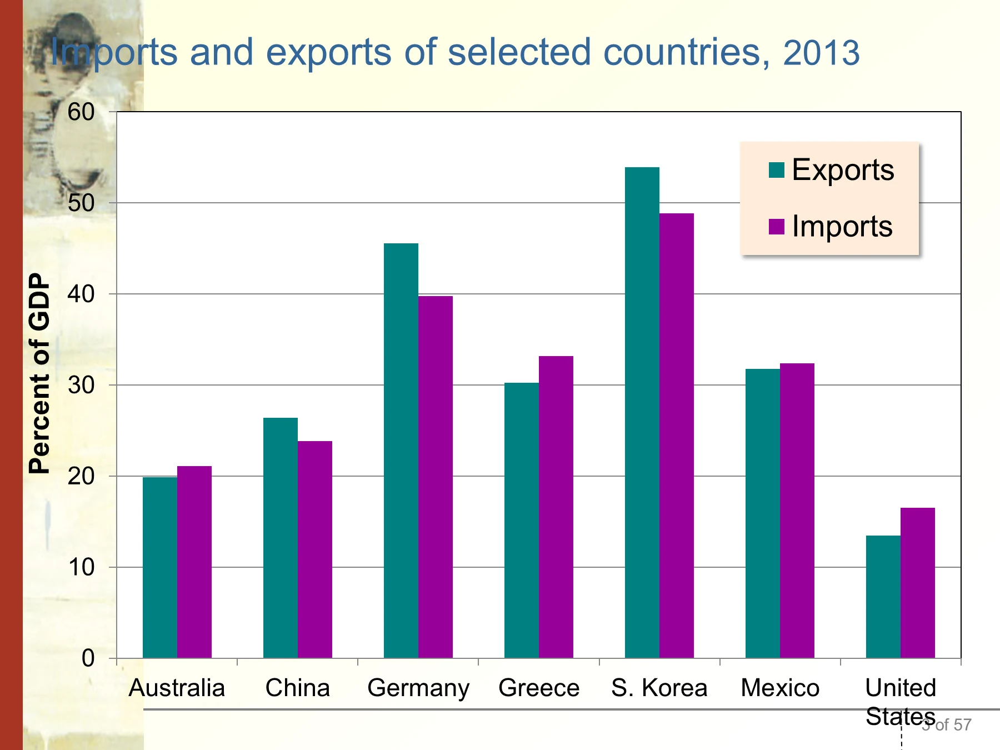
图中 纵轴为占 GDP 的百分比，横轴为七个国家；每组两根柱，左为出口、右为进口。澳大利亚 19.9 / 21.1，中国 26.4 / 23.9，德国 45.6 / 39.8，希腊 30.2 / 33.2，韩国 53.9 / 48.9，墨西哥 31.8 / 32.4，美国 13.5 / 16.5。
用美元计，美国的进出口规模是世界第一，但换成占 GDP 的比重，它排在七国末位：出口 13.5%、进口 16.5%。韩国和德国的比例是它的三倍以上。这张图要纠正的直觉是「贸易量大＝开放度高」——一个大经济体内部交易多，外贸占比自然被摊薄。
柱子的高低差不重要，重要的是每组两根柱子的差。中国出口比进口高 2.6 个百分点，德国高 5.8，韩国高 5.1，都是顺差；美国进口比出口高 3.0，希腊高 3.0，是逆差。这个差就是贸易余额，也是本章唯一要解释的对象。
顺差国与逆差国在图上并排出现，说明贸易余额不是「开放不开放」的度量，而是一个需要单独解释的变量。后面模型的任务就是把它的符号和大小定下来。
In dollar terms, U.S. trade is huge, but as a percentage of GDP, it is smaller than that of many other countries.
Source: World Development Indicators, World Bank
http://databank.worldbank.org/ddp/home.do?Step=3&id=4
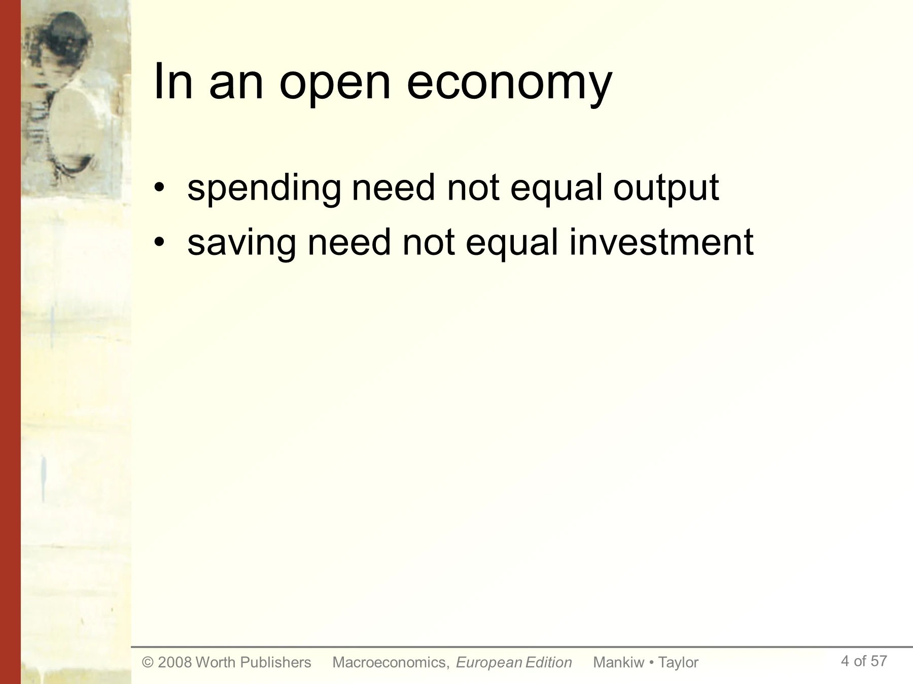
第 3 章的可贷资金市场建立在一个封闭前提上：本国储蓄者只能借钱给本国投资者，于是 S = I 被当成均衡条件。开放以后这条等式立刻失效——一个国家的储蓄可以买到外国的工厂和债券，本国的投资也可以由外国人的钱来融。储蓄与投资之间被插进了一条通道，通道的流量就是本章的主角。
第一条「支出不必等于产出」讲的是产品市场。一个国家可以花得比产得多，差额由进口补上；也可以产得比花得多，余额变成出口。这两条不是两个独立的假设，而是同一件事的两面：花得比产得多，就必然要向外国借，也就是储蓄小于投资。
需要分清的是「不必相等」与「恒等式仍然成立」。Y = C + I + G + NX 永远成立，只是 NX 不再是零；S − I 永远等于 NX，只是这个差不再被强制为零。恒等式没有被推翻，被推翻的是封闭模型里那条额外的均衡条件。
常见误读：以为开放经济里 Y = C + I + G 也成立，只是「近似」。它不成立，差额就是 NX，不是误差。
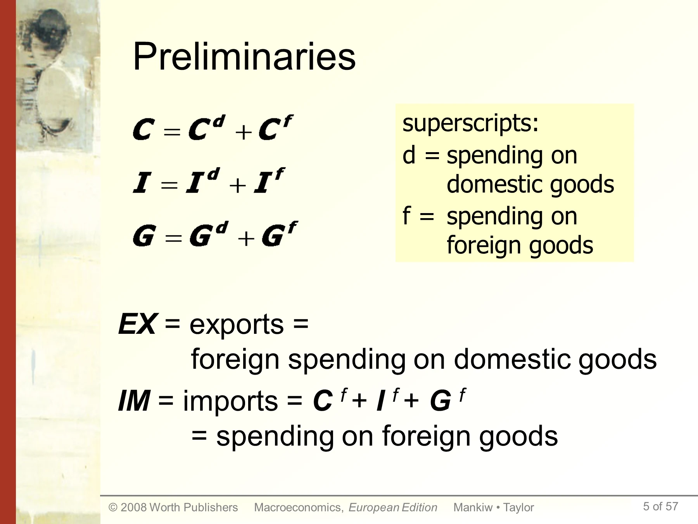
上标：
EX ＝ 出口 ＝ 外国对本国产品的支出
IM ＝ 进口 ＝ Cf + If + Gf ＝ 对本国以外产品的支出
上一页说支出不必等于产出，要把这句话算清楚，得先把「支出」拆到能跟产出对得上的粒度。拆分的标准不是谁在花钱，而是钱花在哪国生产的东西上：同一笔消费，买本国车就计入本国 GDP，买进口车就不计入。所以给 C、I、G 各加一个上标，d 表示落在本国产品上，f 表示落在外国产品上，三组各自相加仍等于原来的总量。
出口的定义正是从这个拆分里长出来的。本国产品中被外国人买走的部分，在对方的账本上记为 Cf*、If*、Gf*（星号表示外国的对应量），在本国账本上就是 EX。进口则相反，是本国支出中落在外国产品上的部分，正好是 Cf + If + Gf。两个定义从不同方向切：EX 从外国的支出里切，IM 从本国的支出里切。这个不对称是后面所有推导的技术基础。
容易读错的是 Cd。它不是「本国居民的消费」，而是「对本国产品的消费」；本国居民买的进口品记在 Cf 里。同理，进口不等于「本国不生产的东西」，而是「本国支出流向国外的部分」——本国也生产汽车，但照样进口汽车。
把 d/f 理解成「产地」而不是「买家国籍」，下一页的恒等式就只是记账，没有一处需要额外假设。
Before displaying the second and subsequent lines, explain the first one:
Total consumption expenditure is the sum of consumer spending on domestically produced goods and foreign produced goods.
EX: The value of the goods we export to other countries equals their expenditure on our output.
IM: The value of our imports equals the portion of our country’s expenditure (the portion of C+I+G) that falls on foreign products.
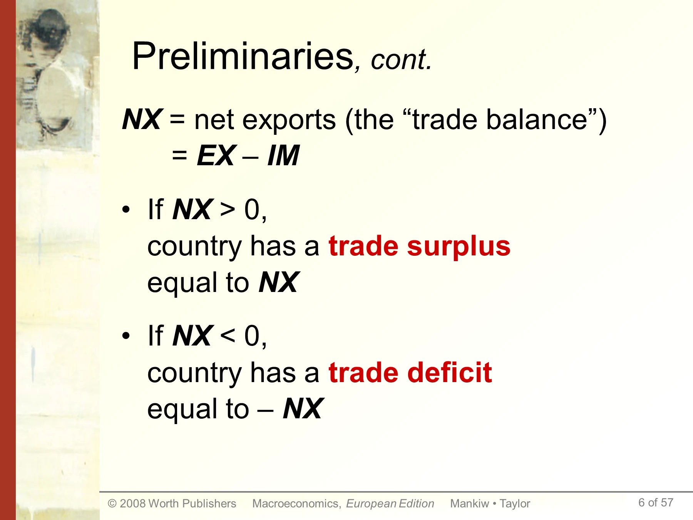
NX ＝ 净出口（即「贸易余额」）＝ EX − IM
贸易余额是净值，不是总量。出口 100、进口 120 的国家，新闻里说它「逆差 20」，而它的贸易总额是 220。这两个数常被混着用，导致对「贸易战能减少逆差」这类命题的判断失真。
符号约定要记牢：逆差记作 NX < 0，报出的逆差数字是 −NX，去掉负号。顺差国是净贷方，逆差国是净借方，这一点在下一页之后会反复用到——贸易上的差额必然对应资金上的反向流动，两者不可能各自独立。
还有一层：NX 可以很大而贸易量很小（比如资源出口国），也可以很小而贸易量很大（比如转口贸易为主的地区）。所以 NX 衡量的是失衡，不是开放程度。
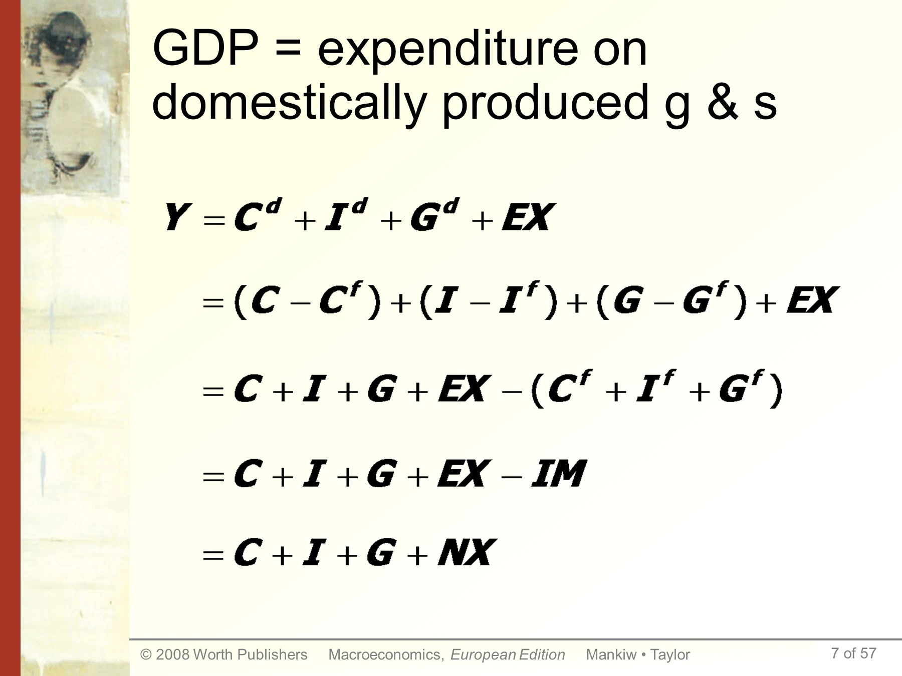
推导 五行依次为：定义、代入上标分解、合并同类项、用 IM 替换、用 NX 替换。
把上标分解代进 GDP 的定义，恒等式就出来了。全程只用加减法，但每一步都在做同一件事：把「总支出」翻译成「对本国产品的支出」。
第一行是定义。GDP 是本国要素生产的最终产品价值，按支出法数，就是所有落在本国产品上的支出之和。外国人对本国产品的支出不在本国的 C、I、G 里，所以要单列 EX。
第二行把 Cd 换成 C − Cf，其余同理。这一步没有新增假设，只是把「对本国产品的支出」写成「总支出减去对进口品的支出」。
第三行合并同类项，括号里三项之和正是进口 IM，于是第四行、第五行。减号的位置值得停一下：C + I + G 是本国的总支出，其中有一部分买了外国货，不构成本国产出，必须减掉；出口是本国产出中被外国人买走的部分，本国支出里没有它，必须加回。一减一加，把总支出校正成对本国产出的支出。
漏掉进口会高估 GDP，漏掉出口会低估，两者都是记账错误，不是理论分歧。也正因为它是记账，这个式子对任何国家、任何年份都成立，不依赖价格是否灵活、利率是否由市场决定——后面所有模型的结论，最终都要落回这条恒等式上接受检验。
A country’s GDP is total expenditure on its output of final goods & services. The first line adds up all sources of spending on domestically produced goods & services.
The second & subsequent lines present an algebraic derivation of the national income accounting identity for an open economy.
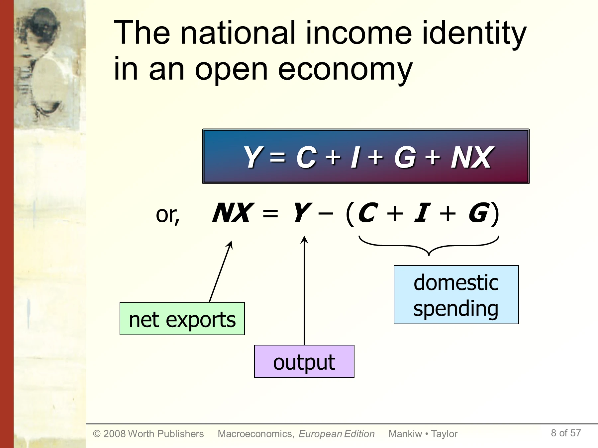
这是 NX 的第一种算法：产出减国内支出。若一国生产 1000 亿欧元的最终产品，国内只买了 800 亿，剩下的 200 亿必然被外国人买走，所以 NX = 200 亿。反过来，若国内花了 1100 亿，多出的 100 亿只能来自进口，NX = −100 亿。
这个算法把 NX 说成「产出的净流出」，它的好处是把贸易余额直接挂到两个可观测的总量上：GDP 和国内支出。麻烦在于它不能告诉你为什么失衡——Y 和 C + I + G 都是结果，谁推动谁在这里看不出来。
要留意 NX 与 EX 的区别。产出大于支出，意味着净出口为正，但不意味着出口多：一个出口 500、进口 450 的国家，NX 只有 50；一个出口 50、进口 10 的国家，NX 是 40。前者贸易量大得多，失衡却更小。NX 度量的是差额，不是流量规模。
把「贸易逆差」读成「竞争力差」是常见跳跃。恒等式只说花得比产得多，没说为什么花得多——可能是储蓄低，也可能是投资旺，下一页会给出区分它们的办法。
Solving this identity for NX yields the second equation, which says:
A country’s net exports---its net outflow of goods---equals the difference between its output and its expenditure.
Example: If we produce €100b worth of goods, and only buy €80b worth, then we export the remainder.
Of course, NX can be a negative number, which would occur if our spending exceeds our income/output.
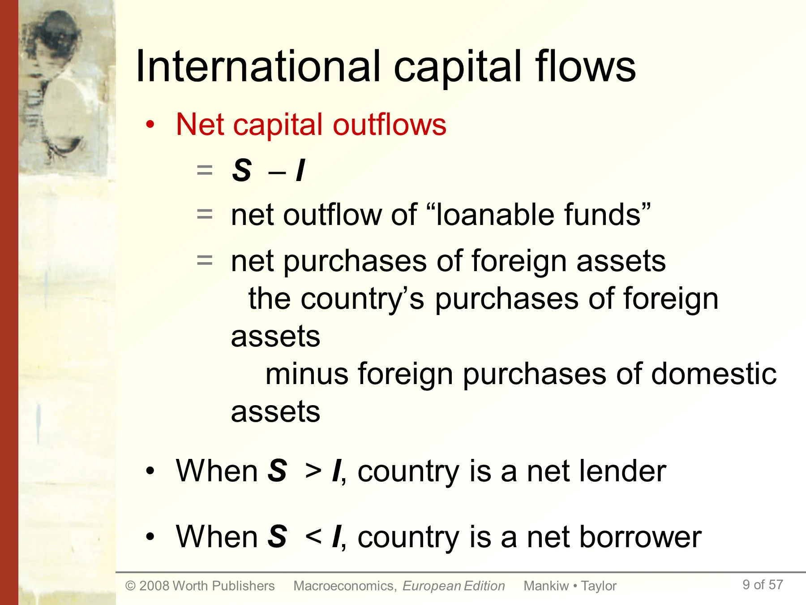
净资本流出
当 S > I，该国是净贷方；当 S < I，该国是净借方。
第 3 章里，储蓄者只能借钱给本国投资者，借款人也只能向本国储蓄者借，于是 S = I 是均衡条件。开放以后，本国的可贷资金有两条出路：借给本国企业，或者买外国的资产；本国企业的投资也有两个来源：本国储蓄，或者外国人的钱。差额 S − I 就是走国际通道的那部分。
名字叫「资本」流动，实际流动的不是机器设备——没有工厂被拆下来运到波兰。真正跨境的是可贷资金，也就是金融资本，它随后被用来购买实物资本。所以「净资本流出」与「净外国投资」是同一件事的两种叫法：前者强调资金，后者强调资产的归属。
S > I 时，本国储蓄超过本国投资需求，多余部分买外国资产，本国是净贷方，未来收取外国资产的收益；S < I 时，本国投资超过储蓄，缺口靠向外国借，本国是净借方，未来要支付利息。净资本流出的符号，同时说明了资金方向和未来的收入方向。
这一步之后，模型里就有了两个可以各自独立讨论的市场：可贷资金市场决定 S − I，产品市场通过 NX 与它相连。下一页说明这两个量不是「相关」，而是相等。
In chapter 3, we examined a closed economy model of the loanable funds market. Savers could only lend money to domestic borrowers. Firms borrowing to finance their investment could only borrow from domestic savers. Thus, S = I.
But in an open economy, S need not equal I. A country’s supply of loanable funds can be used to finance domestic investment, or to finance foreign investment (e.g. buying bonds from a foreign company that needs funding to build a new factory in its country).
Similarly, domestic firms can finance their investment projects by borrowing loanable funds from domestic savers or by borrowing them from foreign savers.
International borrowing and lending is called “international capital flows” even though it’s not the physical capital that is flowing abroad --- we don’t see factories uprooted and shipped to Poland or China. Rather, what can flow internationally is “loanable funds,” or financial capital, which of course is used to finance the purchase of physical capital.
Note: foreign investment might involve the purchase of financial assets – stocks and bonds and so forth – or physical assets, such as direct ownership in office buildings or factories. In either case, a person in one country ends up owning part of the capital stock of another country.
The equation NFI = S – I shows that, if a country’s savers supply more funds than its firms wish to borrow for investment, the excess of loanable funds will flow abroad in the form of net foreign investment (the purchase of foreign assets). Alternatively, if firms wish to borrow more than domestic savers wish to lend, then the firms borrow the excess on international financial markets; in this case, there’s a net inflow of loanable funds, and NFI < 0.
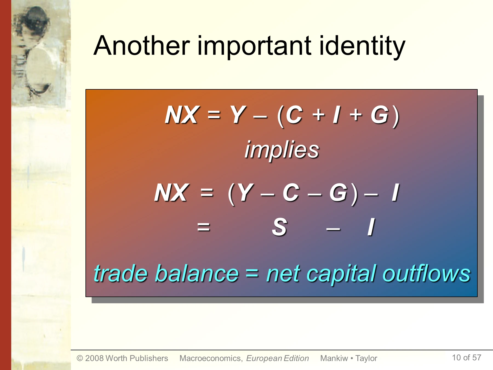
蕴含
NX = (Y − C − G) − I = S − I贸易余额 ＝ 净资本流出
从上一页的恒等式出发，只做一次移项，就能把贸易余额和资本流动锁在一起。
先把 NX = Y − (C + I + G) 里的括号拆开，得到 NX = Y − C − G − I。再注意到国民储蓄的定义是 S = Y − C − G，也就是产出扣掉私人消费和政府购买之后剩下的部分，把它代进去，就得到 NX = S − I。货物净流出与资金净流出，在记账上必然是同一个数。
这个式子看起来平凡，含义却不轻。它说：一个国家若长期保持大额贸易逆差（NX < 0），那它必然同时是低储蓄、高投资，或者两者兼有，并且必然在净借入外国资产。这三件事不是三种可能，而是同一件事的三种说法。美国自 1980 年代以来每年逆差，对应的就是储蓄相对投资持续偏低，以及对外净负债的不断累积——下一页的数据和再下一页的资产负债表，说的都是这条等式的另一面。
但要说清楚它不提供什么。它是恒等式，对任何行为假设都成立，因此不能用来推断因果方向。看到逆差，你不能从式子里读出「是储蓄下降导致的」还是「是投资上升导致的」——两种都会让 S − I 变小，但政策含义完全相反：前者要检讨财政，后者可能是好事。要区分，必须引入模型，让 S 和 I 各自有决定因素，这正是本章后半段要做的事。
另一个常见误用：把 NX = S − I 当作「储蓄增加必然改善贸易余额」的证明。它只在 I 不变时成立；若储蓄上升同时带动投资上升，NX 可以纹丝不动。
Starting from the equation derived on slides 6 and 7, we can derive another important identity: NX = S – I
This equation says that Net exports (the net outflow of goods) = net capital outflows (the net outflow of loanable funds)
While the identity and its derivation are very simple, we learn a very important lesson from it:
A country (such as the U.S.) with persistent, large trade deficits (NX < 0) also has low saving, relative to its investment, and is a net borrower of assets.
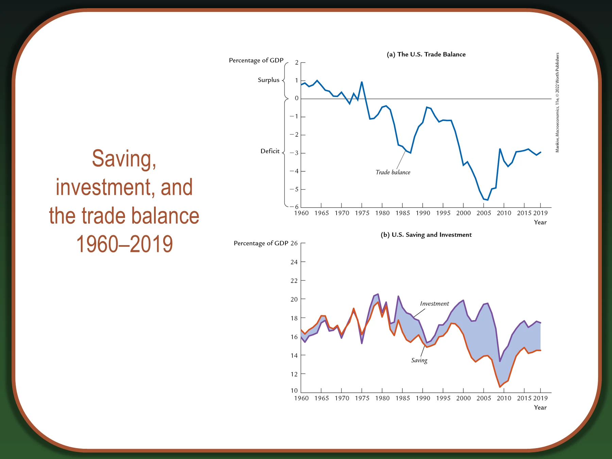
图中 左轴为储蓄与投资占 GDP 的百分比，右轴为贸易余额占 GDP 的百分比（两轴零点位置不同）；实线为投资，虚线为储蓄，另一条为贸易余额。
图上两条主线的相对位置，就是 NX = S − I 的图形版。1980 年代之前，储蓄线多数时间在投资线之上；此后两线交叉并长期倒挂，投资高于储蓄约 2–4 个百分点，对应的正是持续的贸易逆差。
读这张图有个陷阱：贸易余额画在右轴，两条曲线的零点不在同一高度。肉眼看「余额线在零以下多少」，得到的不是占 GDP 的百分点，必须回到右轴刻度。用两条主线的垂直距离读逆差反而更可靠。
还有一点：储蓄与投资的缺口在 2008 年前后急剧扩大，随后收窄，这个起伏与危机期间的消费萎缩、投资停摆同时发生。恒等式保证缺口等于余额，但不保证缺口由哪一侧造成——图上只能看到结果。
Notice that investment > saving pretty consistently beginning in the early 1980s.
The trade balance is measured on the right-hand scale; note that the location of 0% is different on the two scales.
Source: Federal Reserve Bank of St. Louis
Notes: Investment was constructed as the sum of gross private domestic investment (GPDI), federal government defense investment (DGI), federal government nondefense investment (NDGI), and state and local investment (SLINV).
Saving is simply gross saving (GSAVE). The trade balance was constructed as saving minus investment.
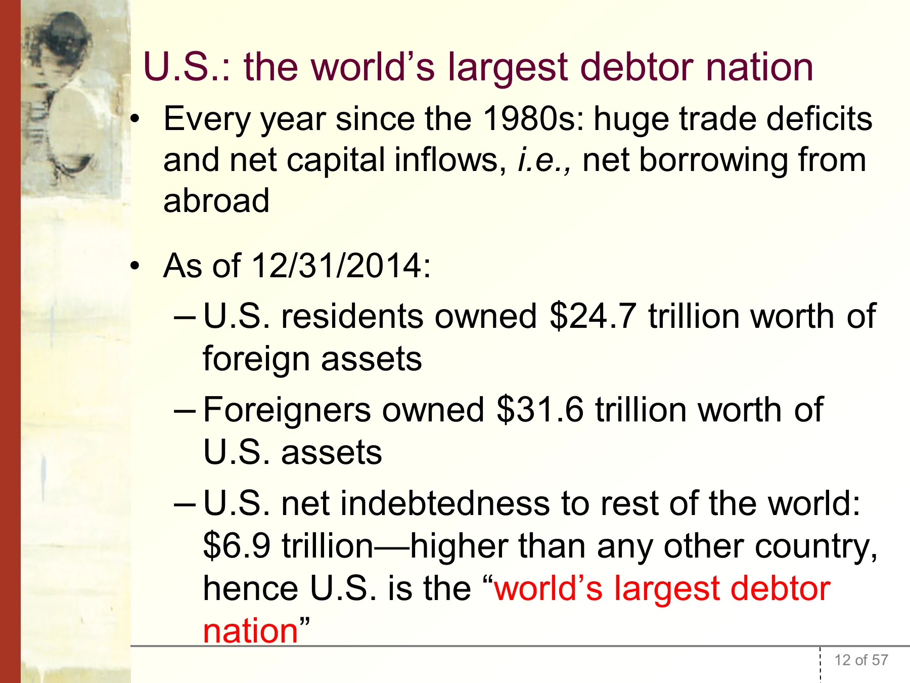
净负债是存量的差，不是流量的累加：31.6 − 24.7 = 6.9 万亿。这个数约占当年 GDP 的四成，每年要付的利息因此不小，但相对产出仍可承受。
真正的问题是：美国为什么付得起。它借入时支付的利率低于它贷出时收取的利率，这个「利差」让它在净负债上升的同时，净投资收益未必恶化。原因一半在美元资产的安全性溢价，一半在估值效应：外国持有的美国资产多以美元计价，美元贬值时负债的实际价值自动缩水。
这两条都不是永久的。净负债越滚越大，愿意继续按低利率融资的人会越少，与信用卡额度用满后利率上升是同一个道理。真要发生，调整的方式不是慢慢还债，而是汇率与相对价格的突然变动。
Servicing this huge debt, of course, uses up some of our GDP each year, though fortunately relatively little: the U.S., so far, has been able to borrow from abroad at lower interest rates than it lends to abroad.
However, this may well change. Just as credit card companies raise your interest rate when your balance rises above a certain level, the countries that hold U.S. assets may well require higher interest rates to make them willing to continue to finance our trade deficits.
How did it get to this point? Why do we have such huge trade deficits year after year? How do government policies affect the trade deficit? These are the questions your students will learn about in the rest of this chapter.
Source: Bureau of Economic Analysis, http://www.bea.gov
Look for “International Investment Position” under “International” or “International Economic Accounts”
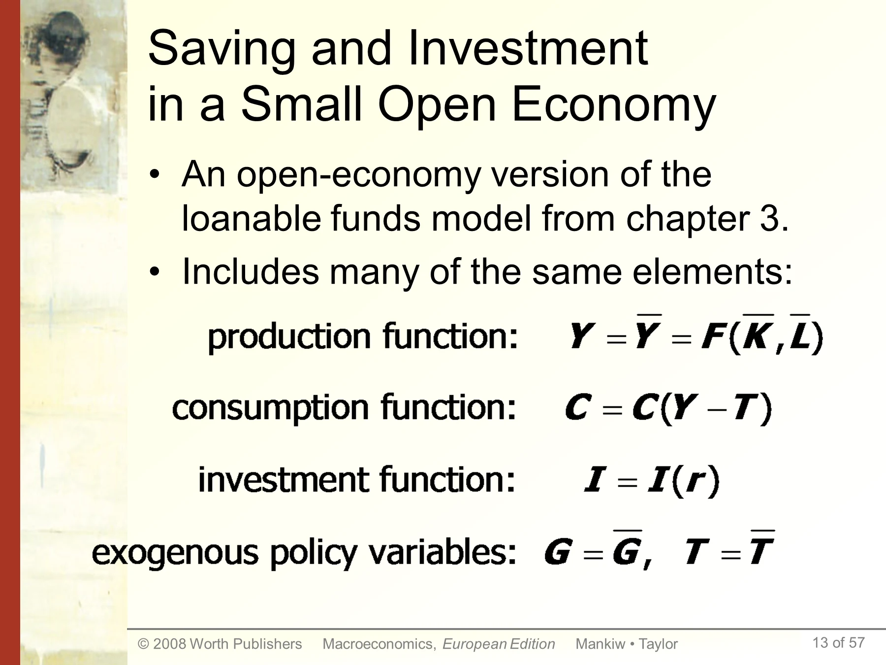
第 3 章可贷资金模型的开放经济版本。
包含许多相同的构件：
模型的骨架与第 3 章完全一样，只换掉了一条。产出由资本、劳动和技术决定，是长期分析，不随需求波动；消费是可支配收入的函数，边际消费倾向小于一；投资与利率负相关，因为融资成本上升会砍掉一部分项目。这三个行为方程决定了储蓄曲线和投资曲线的形状。
被换掉的是均衡条件。封闭经济里靠利率调整让 S = I；开放经济里利率不再由本国市场出清决定，而是由世界市场给定。于是本国利率变成一个参数，S 与 I 之间的缺口由国际资本流动填补。
换掉一条均衡条件，整个模型的因果结构就变了：封闭模型里利率是内生变量，开放小国模型里它是外生的。下一页开始逐个看这三条曲线的位置由什么决定。
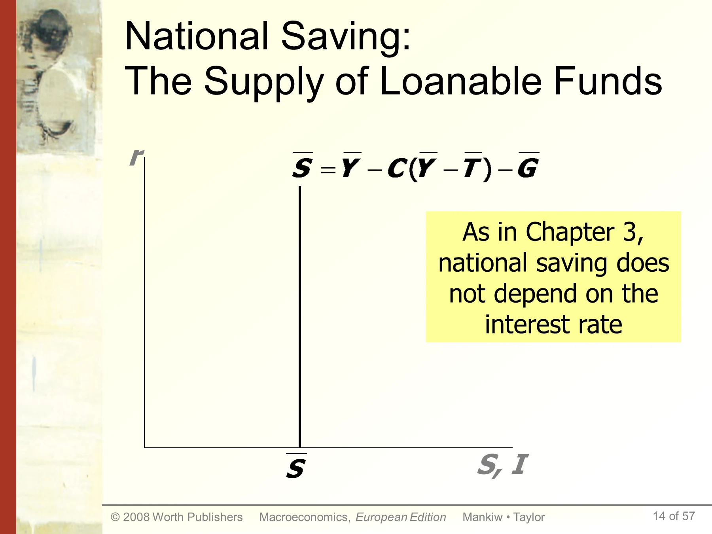
图中 纵轴为利率 r，横轴为储蓄与投资 S、I；储蓄曲线是一条垂直线，位置由 S = Y − C − G 决定。
与第 3 章一样，国民储蓄不取决于利率。
储蓄曲线垂直，是因为式子里根本没有 r：S = Y − C(Y − T) − G。产出由要素禀赋决定，税收与政府购买是政策变量，消费只随可支配收入变动。利率上升不会让家庭多储蓄一分钱。
这个假设值得怀疑。现实中利率上升通常提高储蓄率，至少对富裕家庭如此。教材采用垂直版本，是为了把注意力集中在国际资本流动上：如果储蓄也随利率上升，财政扩张挤出投资的程度会变小，传导链会多出一环，结论的方向不变但幅度难算。垂直是简化，不是事实。
垂直还有一层用处：储蓄曲线的左右移动，只可能来自 Y、T、G 或消费偏好的变化。这四类冲击在图形上表现为整条线的平移，与沿线的移动区分得很干净，后面三个思想实验全靠这一点。
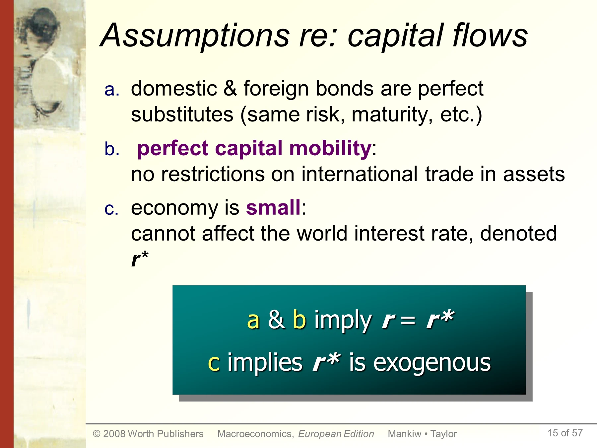
a 与 b 蕴含 r = r*；c 蕴含 r* 是外生的。
这三条假设各自承担不同的工作，混在一起记会看不出哪条可以放松。
第一条说的是资产的可替代性。如果本国债券与外国债券在风险、期限、流动性上完全一样，投资者就只比较收益率；只要两者收益率有差别，资金就会全部涌向高的那一边。这种「要么全要、要么全不要」的行为，逼迫两个收益率相等，于是 r = r*。第一条单独还不够——如果存在资本管制，钱想动也动不了，收益率可以长期不相等。所以第二条补上流动性：跨境买卖资产没有限制。前两条合起来才推出 r = r*。
第三条管的是另一个方向：本国是小国，自己的储蓄和投资决策改变不了世界利率。世界利率由全球储蓄与全球投资决定——把全世界看成一个封闭经济，用第 3 章的办法就能求出 r*。小国面对这个 r*，只能接受。第三条的作用不是让 r 等于 r*，而是让 r* 变成已知数；前两条决定等式，第三条决定右边是外生参数。
三条都偏离现实。风险不同的债券收益率长期存在差别，这就是风险溢价；资本管制在多数新兴市场真实存在；美国、日本、欧元区整体都算不上小国。把这些假设当描述会得出荒唐结论，当近似则很有用——就像完全竞争模型也不真实，却能讲清供求。判断标准是所研究的冲击有多大：一次小规模的财政变动，对 r* 的影响可以忽略，小国假设可用；一次全球性的危机，r* 本身就是被解释对象，假设立刻失效。
2010–2012 年的希腊是第一条失效的教科书案例：希腊国债利率远高于同期的德国国债，资金并没有因为利差而无限流入。差别不在期限，在违约风险，于是 r = r* + 风险溢价。加上这一项，模型仍能用，只是 r 不再外生。
This slide is the first on which students see a foreign variable, in this case, the foreign interest rate r*. In general, a “*” on a variable denotes the foreign or world version of that variable. Thus, Y* = foreign GDP, P* = foreign price level, etc.
The assumption that domestic & foreign bonds are perfect substitutes is implicit in the text, but necessary for the equality of the domestic and foreign interest rate.
Students will realize that assumption a is unrealistic, and c is unrealistic for the Eurozone as a whole, Japan or the U.S. In most cases, it would be a good approximation for any country except the U.S. or Japan individually. These assumptions keep our model simple, and we can still learn a LOT about how the world works (just as the model of supply and demand in perfectly competitive markets is not realistic, yet teaches us a great deal about how the world works).
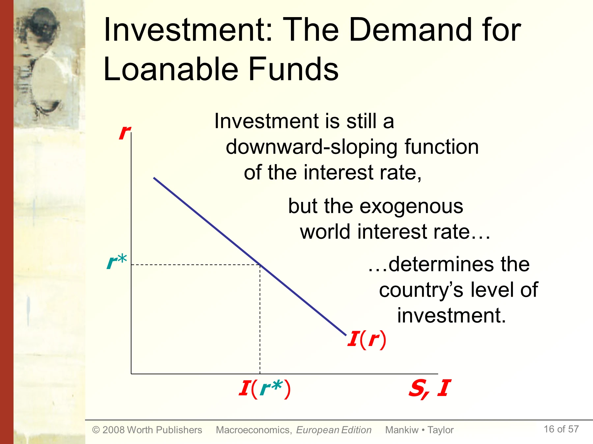
投资仍然是利率的向下倾斜函数，
I = I(r)但外生的世界利率……
r*……决定了该国的投资水平。
I = I(r*)图中 纵轴 r，横轴 S、I；投资曲线向下倾斜，r* 处一条水平线与它相交，交点对应的横坐标即 I(r*)。
投资曲线没有变，仍是那条向下倾斜的线：利率越低，能过盈亏门槛的项目越多。变的是它被读的方式。封闭经济里，利率由储蓄与投资的交点内生决定，投资量是交点的高度；开放小国里，利率由世界市场给定，画一条 r* 的水平线过来，与投资曲线的交点就定下了投资量。
这一步的实质是把投资从「与储蓄共同决定」改成「由 r* 单独决定」。既然 r = r*，而 r* 不受本国影响，那么本国的储蓄多一点少一点，都动不了投资。财政扩张抬高了本国家庭的未来税负、压低了储蓄，投资却纹丝不动——不是企业不想投，是它们面对的资金成本没变。
容易混淆的是「投资需求上升」与「利率上升」。前者是整条 I(r) 右移，后者是沿曲线移动。在小型开放经济里，后一种情况根本不会因本国政策发生，因为利率被钉住了；只有 r* 变化才会。所以后面三个实验里，凡是问「投资变不变」，答案只取决于 r* 有没有动。
如果本国是大国，r 会随本国储蓄变动，投资就不再外生。第 54 页之后处理这种情形，结论正好落在两个极端之间。
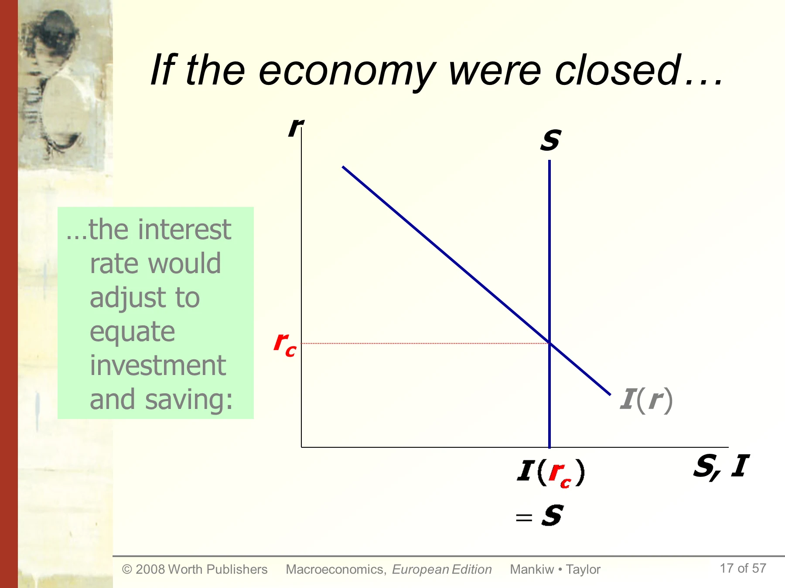
图中 纵轴 r，横轴 S、I；储蓄为垂直线，投资曲线向下倾斜，二者交点给出封闭经济利率 rc。
……利率会调整到使投资与储蓄相等：rc。
把这张图放在这里，是为了给下一页一个对照物。封闭经济里，储蓄曲线垂直、投资曲线向下倾斜，两者交点的高度就是均衡利率 rc，横坐标同时是储蓄量和投资量。利率的唯一职能就是出清这个市场：储蓄多了，利率下降，投资被吸引上来，直到两者相等。
这个机制在开放经济里被拆掉了。rc 仍然有意义——它是「假如不许对外借贷，本国利率会是多少」——但它不再决定任何事。实际利率是 r*，与 rc 的差就是套利空间：若 r* > rc，本国资金觉得外面收益高，往外走；若 r* < rc，外国资金涌进来。这个差额就是净资本流出的动力，也是下一页图形里那段水平距离的来源。
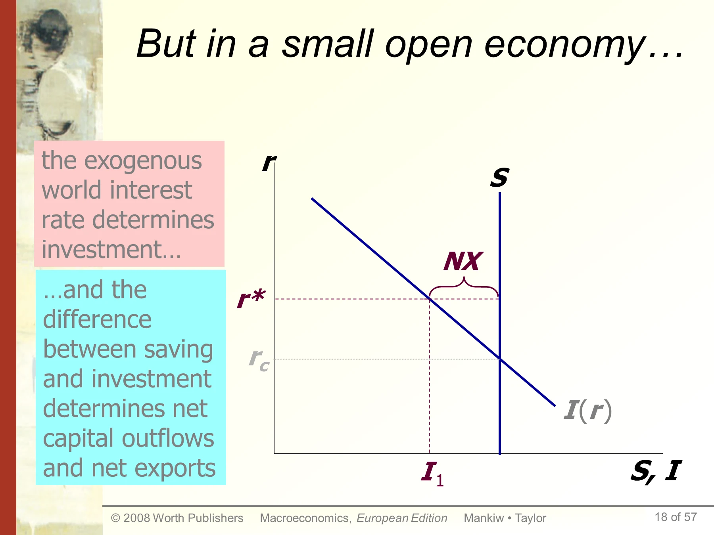
外生的世界利率决定了投资……
I = I(r*)……储蓄与投资的差额决定了净资本流出与净出口。
NX = S − I(r*)图中 纵轴 r，横轴 S、I；垂直的储蓄线、向下倾斜的投资曲线；r* 水平线与投资曲线交于 I1，与储蓄线交于 S；两点之间的水平距离标为 NX。rc 标在储蓄线与投资曲线的交点高度。
这张图是全章的枢纽，值得按顺序读三遍。
第一步，从纵轴上的 r* 引一条水平线。它代表世界市场给本国定的资金成本，本国无力改变。第二步，这条水平线与投资曲线的交点，向下投到横轴，得到 I1。投资就这样被定住了。第三步，储蓄曲线是垂直的，它与 r* 水平线的交点对应的横坐标是 S，与投资的位置无关。第四步，S 与 I1 之间的那段水平距离，就是 S − I，也就是净资本流出，按恒等式同时是 NX。
读图时要抵制一个诱惑：把那段距离当成面积。它是横轴上的长度差，单位与 S、I 相同，不是两条线围出的区域。另一个诱惑是以为交点在「均衡」意义上被决定了——这里没有供求相交，只有一个外生价格加两条独立的数量线，均衡是靠数量差被国际市场吸收来实现的。
图里还标了 rc。它是封闭情形下的利率，位置低于 r*：封闭时利率更低、投资更多，正好等于储蓄；一旦开放，利率被抬到 r*，投资减少，S − I > 0，资金外流，贸易顺差。r* 与 rc 的相对位置，决定了这个国家是净贷方还是净借方：r* > rc 则资本外流、顺差；r* < rc 则资本流入、逆差。
还有一处易混：图上标的 NX 其实是净资本流出。两者相等是恒等式给的，不是这张图推出来的。要让 NX 真的等于那段距离，还需要汇率调整，那是第 36 页之后的事。此刻只能先相信记账。
This graph really determines net capital outflows, not NX. But, the national accounting identities say that NX = net capital outflows, so we write “NX” on the graph as shown.
A little bit later in the chapter, we will see that it is the adjustment of the exchange rate that ensures that NX = net capital outflows. For now, though, students will just have to trust the accounting identities.
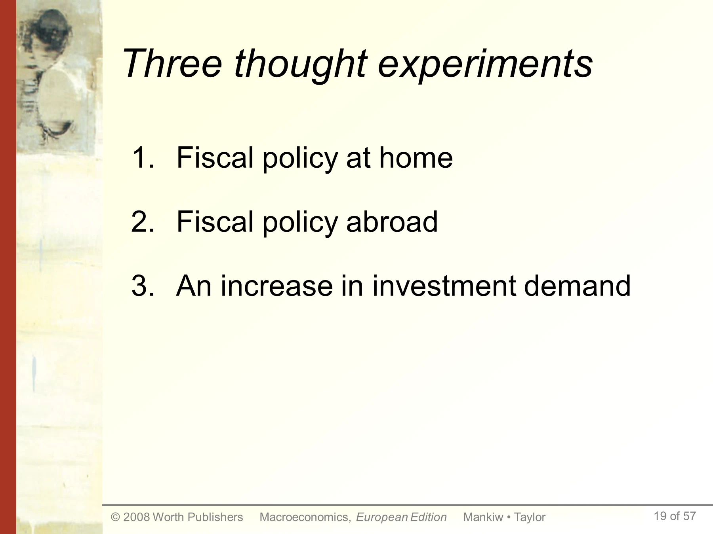
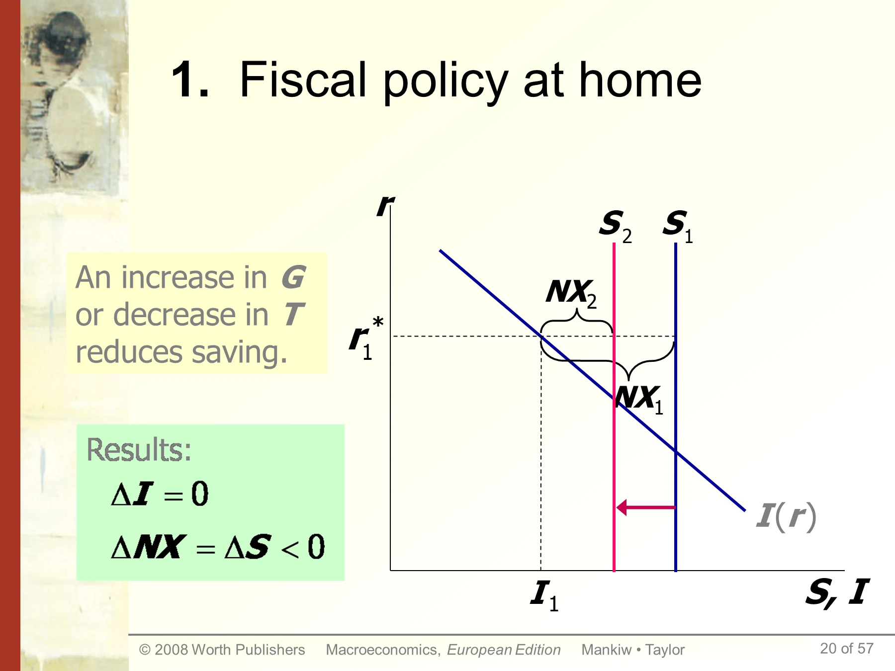
政府购买增加或税收减少，使储蓄下降。
图中 纵轴 r，横轴 S、I；储蓄线由 S1 左移到 S2，r* 水平线不动，投资仍为 I1；NX 由 NX1 缩小到 NX2。
先看哪条线在动。G 上升或 T 下降，都直接减少 Y − C − G 或抬高 C，储蓄曲线整体左移，投资曲线不动，r* 也不动。移动的只有一条线。
接下来是关键的第二步：投资不变。因为利率被 r* 钉住，投资量仍是 I1。储蓄减少多少，S − I 就减少多少，净资本流出等额下降，NX 等额下降。若储蓄减少 1 欧元，NX 就减少 1 欧元，一一对应，没有乘数式的放大。
这与封闭经济的结论形成鲜明对照。封闭经济里，财政扩张抬高利率，被挤出的是投资；开放小国里，利率不动，被挤出的是净出口。挤出没有消失，只是从投资转到了出口——本国家庭多花的那部分钱，把资源从出口部门吸走了。
机制上可以这样理解：政府多借一欧元，本国家庭少储一欧元，本国可贷资金少了；但企业面对的资金成本没变，它们仍要投那么多；缺口只能靠减少对外放贷来填，也就是少买外国资产。少买外国资产意味着少换外汇，本币供给减少，汇率随后升值，出口受挤压——这条后半段要等到第 40 页才会补上，此处只需记住 NX 下降的幅度等于储蓄下降的幅度。
这个实验的适用范围比「财政政策」宽。任何让储蓄左移的力量都走同一条路径：消费偏好转向当前消费、遗产动机减弱、储蓄税率上升。反之，任何让储蓄右移的力量——比如建立强制性养老基金——都会改善贸易余额。
不要把这个结论读成「财政扩张必然有害」。它只说贸易余额会恶化；如果政府支出投在生产性基础设施上，未来的 Y 会更高，那时的 S 和 NX 又是另一回事。模型是长期的，但把 G 当作一次性水平变动。
In a small open economy, the fixed world interest rate pins down the value of investment, regardless of fiscal policy changes. Thus, a €1 decrease in saving causes a €1 decrease in NX and net capital outflows.
Note that the analysis on this slide applies to ANYTHING that causes a decrease in saving. Other examples: a shift in consumer preferences regarding the tradeoff between saving and consumption, or a change in the tax laws that reduces the incentive to save.
Our model generates a prediction: the government’s budget deficit and the country’s trade deficit should be positively related. Does this prediction come true in the real world? Let’s look at the data….
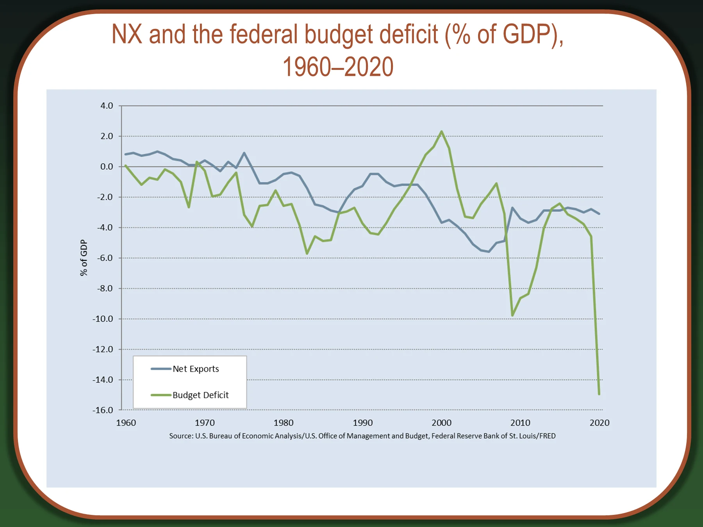
图中 两条时间序列，一为净出口占 GDP 的比重，一为联邦预算赤字占 GDP 的比重；赤字以负值向下绘制，两线大体同向。
模型给了一个可检验的预言：预算赤字扩大，贸易余额恶化。图上多数年份确实如此——1980 年代前期赤字骤增，净出口同步下滑；2000 年代后期赤字再度膨胀，逆差也扩大到 GDP 的 5% 上下。
但有两段明显的反例。1991–2001 年，赤字收敛乃至转为盈余，净出口却继续恶化：那是一次长扩张，收入上升同时推高了进口和税收，两条线被同一个原因推向了相反方向。2008–2009 年反过来，衰退压低了收入，税收和进口一起掉，赤字扩大而逆差收窄。
这些反例不推翻模型，而是提醒它漏了变量：Y 在图上不是常数，而模型假设它是。当 Y 的波动主导时，预算与贸易的同向关系会被掩盖。这也说明单看相关系数判断因果是危险的。
Our model implies a negative relationship between NX and the budget deficit. We observe this negative relationship during most periods.
There are some exceptions. For example, from 1991 to 2001, NX and the budget deficit fell due to a long expansion: rising incomes increased imports and tax revenues.
And, in 2008–2009, NX and the budget deficit rose as the economy faltered: falling incomes reduce both tax revenue and imports.
Source: Department of Commerce.
Obtained from: http://research.stlouisfed.org/fred2/
Series ID: A019RC1A027NBEA (NX), FYFSD , and GDPA (Note: Deficit is in Millions of dollars, needs to be transformed)
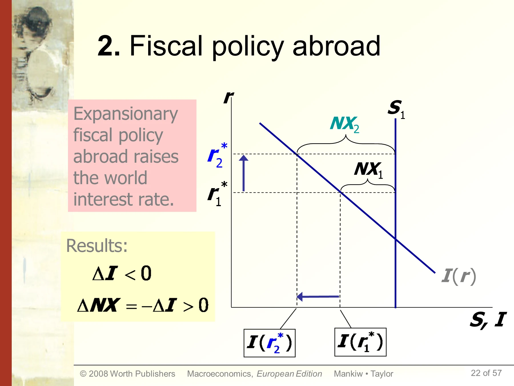
国外的扩张性财政政策抬高世界利率。
图中 纵轴 r，横轴 S、I；r* 上移，沿投资曲线使 I 减少；储蓄线不动；NX 由 NX1 扩大到 NX2。
结果：r* 上升，I 下降，NX 上升。
这次动的线在国境之外。外国的政府购买增加或减税，减少的是世界的储蓄。把全世界看成一个封闭经济，世界储蓄曲线左移，世界利率 r* 上升。本国的储蓄曲线和投资曲线都没有移动，但 r* 这条水平线抬高了。
抬高之后，沿投资曲线向左上方走，投资减少到新的交点。储蓄不变，投资减少，S − I 反而扩大，净资本流出增加，NX 上升。传导链是三段：外国财政 → r* ↑ → I ↓ → NX ↑。
方向值得琢磨。外国扩张，本国受益于贸易余额改善，代价是本国投资被挤掉一部分。原因不是本国企业变差了，而是全球资金变贵了，一部分项目过不了门槛。这正是小国假设的含义：本国的投资要跟全世界的借款需求竞争，别人的赤字会抬高本国的资金成本。
现实对应是 1980 年代美国的财政扩张。当时美国既是本国赤字，又大到足以推动 r*，欧洲国家因此经历了利率上升、投资下降、经常账户改善。对小国来说这是外生冲击；对美国自己，r* 的变化有一部分是自己造成的，那就超出了小国模型的适用范围。
若外国紧缩，链条全部反向：r* 下降，本国投资上升，NX 恶化。这也解释了为什么全球利率长期走低时，小型开放经济体的投资往往更旺、贸易余额更差。
It might be worth taking a moment to explain that the world interest rate r* is determined by saving and investment in the world loanable funds market. S* is the sum of all countries’ saving; I* the sum of all countries’ investment. r* adjusts to equate I* with S*, just like in Chapter 3, because the world as a whole is a closed economy. A fiscal expansion in other countries would reduce S* and raise r* (same results as in chapter 3).
The higher world interest rate reduces investment in our small open economy, and hence reduces the demand for loanable funds. The supply of loanable funds (national saving) is unchanged, so there’s an increase in the amount of funds flowing abroad.
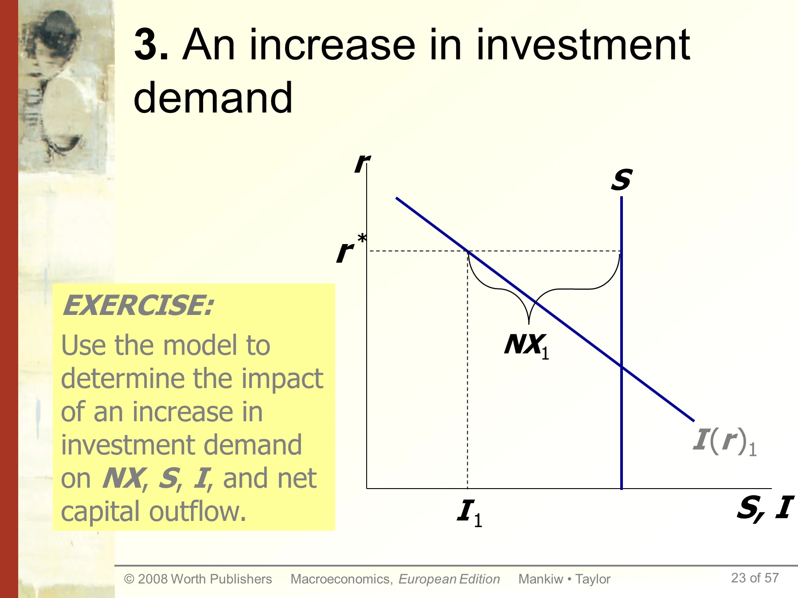
图中 纵轴 r，横轴 S、I；储蓄线垂直不动，投资曲线由 I(r)1 右移到 I(r)2，r* 水平线不动，I1 移至 I2，NX1 缩小。
练习 用模型判断投资需求增加对 NX、S、I 与净资本流出的影响。
先判断哪条线动：投资曲线右移，其余不动。再判断利率：r* 是外生的，不因本国投资需求而变。于是新的交点给出更高的 I，储蓄原地不动，S − I 缩小，NX 同额下降。
要写全四个量：I 上升、S 不变、净资本流出下降、NX 下降。四个答案里只有一个符号是正的，容易在紧张时写错 S——储蓄由 Y、C、G 决定，与投资曲线无关。
和封闭经济比一次：封闭时投资需求上升会抬高利率，从而挤出部分私人投资，最终 I 的增幅小于曲线右移的幅度。这里利率不动，投资全额实现，缺口全部由外部资金补上。
Have students get out a piece of paper, draw this graph on it, and then do the analysis. A couple of minutes should suffice.
It might be useful to have them compare their answers with the results from the closed economy case.
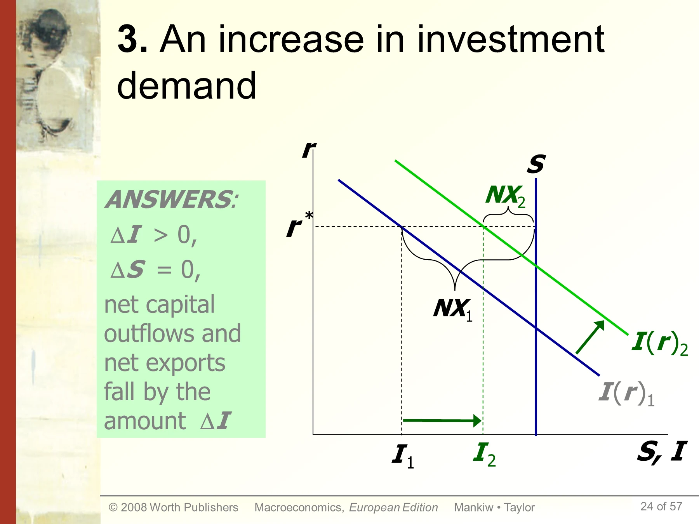
图中 投资曲线由 I(r)1 右移至 I(r)2，I1 → I2，NX1 → NX2，储蓄线不动。
答案
答案的形式值得注意：ΔNX = −ΔI，一欧元的投资增加对应一欧元的净出口减少，没有折扣。原因还是那两步——S 不动，r* 不动，所以 I 的增加全额落在 S − I 上。
和封闭经济对比，差别不在方向而在幅度。封闭经济里投资需求上升会抬高 r，被抬高的 r 又反过来压掉一部分投资，最终 I 只增加一部分，其余被「利率挤出」；储蓄也会因利率上升略有增加。开放小国里利率不动，投资愿望全额兑现，代价全部由贸易余额承担。同样是「挤出」，封闭经济挤出的是投资自己，开放经济挤出的是净出口。
现实中的例子是投资税收抵免或一轮技术浪潮带来的投资热潮。按模型，这类冲击会带来经常账户恶化，而这不是衰退的信号，恰恰是投资机会变多的结果。把它误读成竞争力下降，会把好消息看成坏消息。
若投资上升同时伴随产出 Y 上升（比如投资提高了生产能力），S = Y − C − G 也会上升，NX 的下降就小于 ΔI。模型把 Y 当作固定，所以给出了这个干净的一比一。
In contrast to a closed economy, investment is not constrained by the fixed (domestic) supply of loanable funds. Hence, the increase in firm’s demand for loanable funds can be satisfied by borrowing abroad, which reduces net outflows of financial capital. And since net capital outflows = NX, we see a fall in NX equal to the increase in investment.
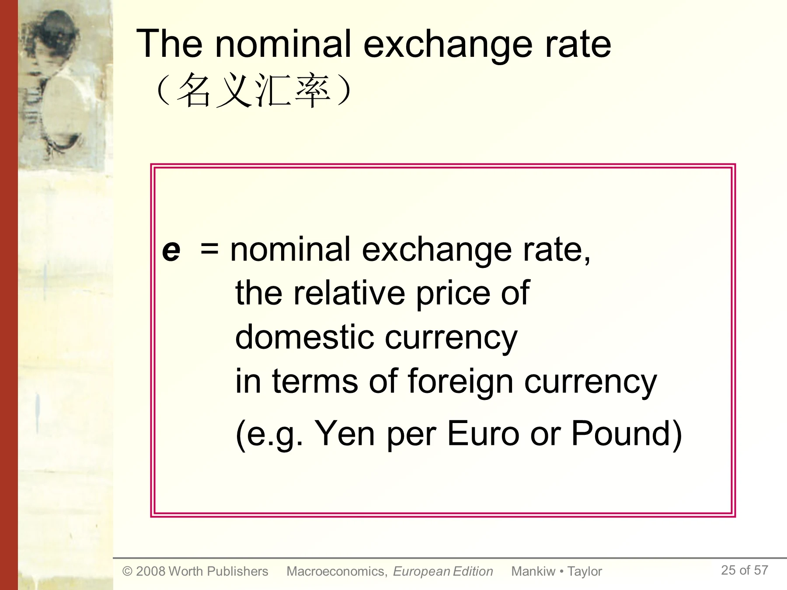
e ＝ 名义汇率，即本国货币用外国货币表示的相对价格（例如每欧元多少日元、每欧元多少英镑）。
e ＝ 外币 / 本币定义里唯一要盯住的是方向：e 的单位是「一单位本币换多少外币」，所以数值变大意味着本币更值钱，即升值；数值变小是本币贬值。这个方向与新闻里「美元走强」的说法一致，但与「一美元换多少人民币」的写法相反，读文献时必须先确认作者用的是哪一种。
两种标价法在数学上等价，公式却要跟着变：若改用「本币 / 外币」定义，实际汇率就要写成 P/(eP*) 而不是 eP/P*。第 28 页的推导完全依赖 e 的方向，方向反了，结论会从「实际汇率上升」变成「下降」，而图形上的曲线移动方向也跟着反。
名义汇率是一种货币的价格，不是商品的价格。它由外汇市场的供求决定，可以一天变动百分之几，而商品价格在同期几乎不动。这个速度差异是后面区分名义与实际汇率的理由。
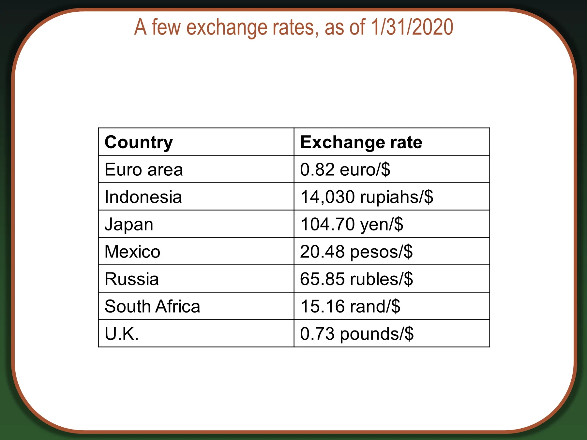
| 国家 / 地区 | 汇率 |
|---|---|
| 欧元区 | 0.82 欧元 / 美元 |
| 印度尼西亚 | 14,030 印尼盾 / 美元 |
| 日本 | 104.70 日元 / 美元 |
| 墨西哥 | 20.48 比索 / 美元 |
| 俄罗斯 | 65.85 卢布 / 美元 |
| 南非 | 15.16 兰特 / 美元 |
| 英国 | 0.73 英镑 / 美元 |
整张表都以美元为基准，读法是「一美元换多少当地货币」。数字大不等于该国货币弱：日元 104.7、英镑 0.73，不能由此说英镑比日元强二十倍——单位不同，量的意义就不同。跨货币比较名义汇率水平毫无意义，只有变动率可比。
表里唯一能横向比的是变动，而变动这张表给不了。这也是为什么后面讨论汇率决定时，用的都是百分比变化而不是水平值：第 47 页的公式、第 48 页的散点图，纵轴都是变化率。
名义汇率的另一个特点是它对宏观新闻极其敏感，一天之内可以移动百分之一二，而物价指数一个月才动千分之几。两者量级不同，正是长期与短期分析要分开的原因。
If you’d like to update these figures before your lecture, you can find good exchange rate data at https://www.xe.com/currencytables/?from=USD&date=2021-01-31
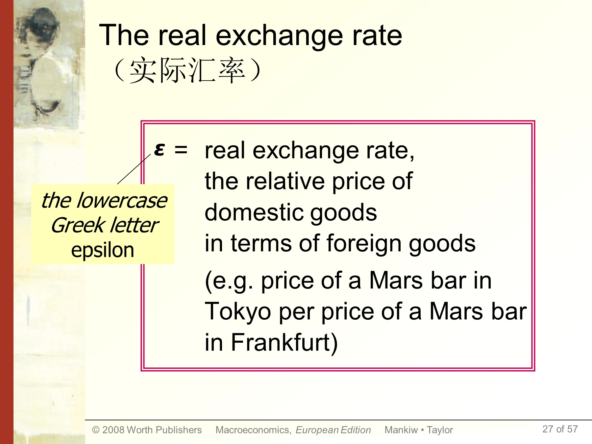
ε ＝ 实际汇率，即本国商品用外国商品表示的相对价格（例如东京一块 Mars 巧克力的价格能换法兰克福几块）。
ε 是小写希腊字母 epsilon。
名义汇率换的是货币，实际汇率换的是商品。前者回答「一欧元值多少日元」，后者回答「一单位本国商品能换多少单位外国商品」。真正影响出口商和进口商决策的是后者：如果本币升值 5%，但本国物价同时下降 5%，那么外国买家面对的价格没有变化，贸易量也不该变。
这就是为什么 NX 要写成 ε 的函数而不是 e 的函数。汇率变动只有在改变了相对价格时才有实际效应；被物价变动抵消掉的那部分，只是名义现象。把名义与实际分开，是本章后半段所有结论的前提。
ε 没有单位，是一个纯比率。正因为无量纲，它才能把不同国家、不同年份的相对竞争力放在同一个尺度上比较。
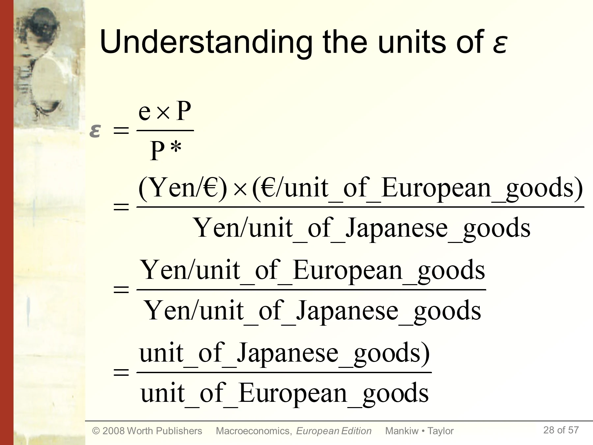
单位推导 e：外币 / 本币；P：本币 / 本国篮子；P*：外币 / 外国篮子。
分子 e × P 的单位是「外币 / 本国篮子」，分母 P* 的单位是「外币 / 外国篮子」，相除得「外国篮子 / 本国篮子」。
这个式子几乎每个人都会背，但单位一错，后面的政策实验就全部反过来。逐项消去一遍。
先看 e：它的单位是「外币 / 本币」，比如 120 日元 / 欧元。再看 P：本国一个消费篮子的价格，单位是「本币 / 本国篮子」，比如 0.60 欧元 / 篮子。两者相乘，(本币) 在分子分母上各出现一次，约掉，剩下「外币 / 本国篮子」——也就是把一个本国篮子折算成外币之后的价格，比如 72 日元 / 篮子。
再看 P*：外国一个篮子的价格，单位「外币 / 外国篮子」，比如 48 日元 / 篮子。用它去除上面那个量：(外币) 约掉，「本国篮子」跑到分母上，最终单位是「外国篮子 / 本国篮子」。
所以 ε 是一个纯数，含义是「一个本国篮子值几个外国篮子」。这个结果不是巧合：分子和分母都是同一种货币计价的篮子价格，货币单位必然消掉，剩下的只能是篮子的比。若 ε 还带着货币单位，说明某一步乘除搞反了。
单位消干净之后，方向就好判断了。e 上升（本币升值），分子变大，ε 上升，本国商品变贵；P 上升（本国物价上涨），分子同样变大，ε 上升；P* 上升（外国物价上涨），分母变大，ε 下降，本国商品相对变便宜。三条结论都能从式子里直接读出来，不需要额外记。
如果改用「本币 / 外币」定义 e，同样的推理会得到 ε = P / (eP*)。公式变了，单位仍消得干净，但升降方向全部对调。做题时先写下 e 的单位，比背公式可靠。
Students often have trouble understanding the units of the real exchange rate.
It’s worth explaining each line carefully, and making sure students understand it before displaying the next line.
Note: The examples here and in the text are in terms of one good, a Mars bar. But P and P* are the overall price levels of the domestic & foreign countries. Thus, they each measure the price of a basket of goods.
When you get to the bottom line, emphasize that the real exchange rate measures the amount of purchasing power in Japan that must be sacrificed for each unit of purchasing power in Europe.
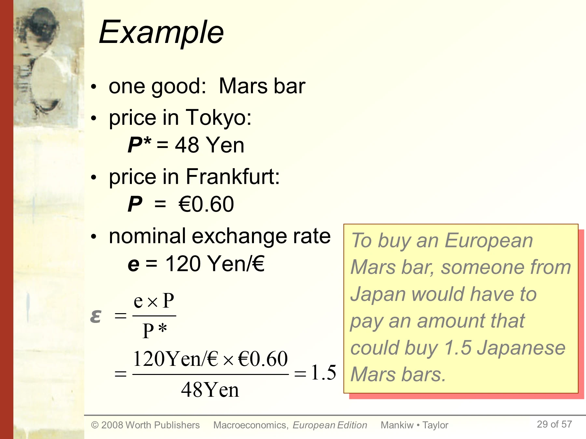
只有一种商品：Mars 巧克力。
一个日本人要买一块欧洲的 Mars，得付出相当于 1.5 块日本 Mars 的钱。
把数字代进去，式子就有了内容。120 日元 / 欧元乘 0.60 欧元，得 72 日元——这是法兰克福一块巧克力折成日元的价格。再除以东京的 48 日元，得 1.5。
读法是：一块欧洲巧克力值一块半日本巧克力。日本消费者要享受欧洲的巧克力，得放弃一块半本国巧克力；欧洲消费者买本国货只需放弃一块，买日本货则只要 48/72 ≈ 0.67 块本国巧克力。相对价格站在欧洲一边，欧洲货贵。
ε > 1 的含义是本国商品相对昂贵，出口竞争力弱，进口有吸引力，按第 31 页的逻辑 NX 偏低。ε 的数值本身没有绝对意义，只有相对 1 的位置有意义——1 是两国商品交换比为 1:1 的基准。
顺便验证一下第 45 页要用的反解：e = ε × P*/P = 1.5 × 48 / 0.60 = 120，回到原值。这条往返关系说明三个变量中任意两个决定第三个。
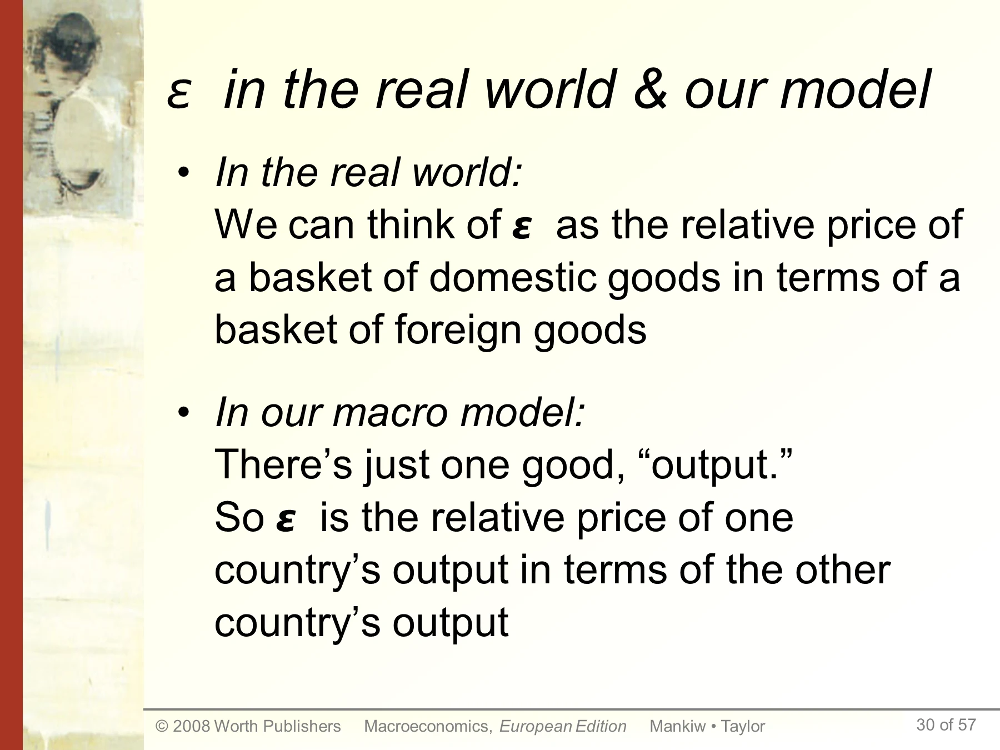
现实中：可以把 ε 理解为一篮子本国商品用一篮子外国商品表示的价格。
在我们的宏观模型中：只有一种商品——「产出」，所以 ε 是一国产出用另一国产出表示的价格。
模型里只有一个「产出」，所以 ε 是两种产出之间的交换比，干净但没有对应物。现实中必须选一个篮子：用 CPI 篮子，ε 衡量的是消费品的相对价格；用 GDP 篮子，衡量的是「一单位本国 GDP 能换几单位外国 GDP」，更贴近生产端的竞争力。
两个篮子给出的 ε 会不一样，因为进出口的商品构成与消费篮子并不重合。这也解释了为什么不同的实际汇率指标常常给出不一致的信号——不是数据错了，是篮子里装的东西不同。
模型的一产品假设在这里的代价是：它无法区分「本国货变贵」与「本国出口品变贵」。现实中两者可以背离，比如内需旺盛推高服务业价格，而制成品出口价格没动。
A good candidate for the basket of goods mentioned here is the CPI basket. Perhaps a better candidate would be a basket including all goods & services that comprise GDP. Then, the real exchange rate would measure how many units of foreign GDP trade for one unit of domestic GDP.
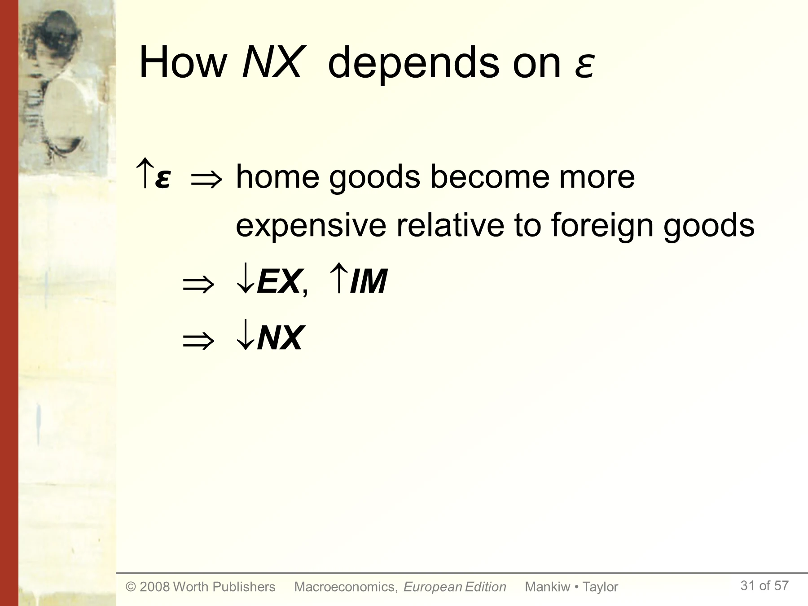
ε ↑ ⇒ 本国商品相对外国商品变贵
⇒ EX ↓，IM ↑
⇒ NX ↓
这条链条的每一环都很直接。ε 上升，本国商品用外国商品计价变贵；外国买家转向别处，出口下降；本国买家转向进口，进口上升；两者同向变动，NX 的下降幅度是两段之和，而不是其中一段。
注意这里用的是 ε 而不是 e。若本币升值但本国物价同步下跌，ε 不变，NX 也不变——出口商按外币报价没变，进口品按本币算也没变。只有相对价格变动才有贸易效应，名义汇率的变动本身不是原因。
这条负向关系是后面整张图的基础。它假设其他条件不变：Y、Y*、偏好、关税都不动。若外国收入上升，同一 ε 下出口更多，整条曲线右移——这是曲线的移动，不是沿线的移动，两者在图上的区别正是政策实验的关键。
短期内这条关系可能失灵：汇率变动后，进出口合同与供应链要过几个季度才调整，贸易余额先恶化后改善，即J 曲线。模型讲的是调整完成之后。
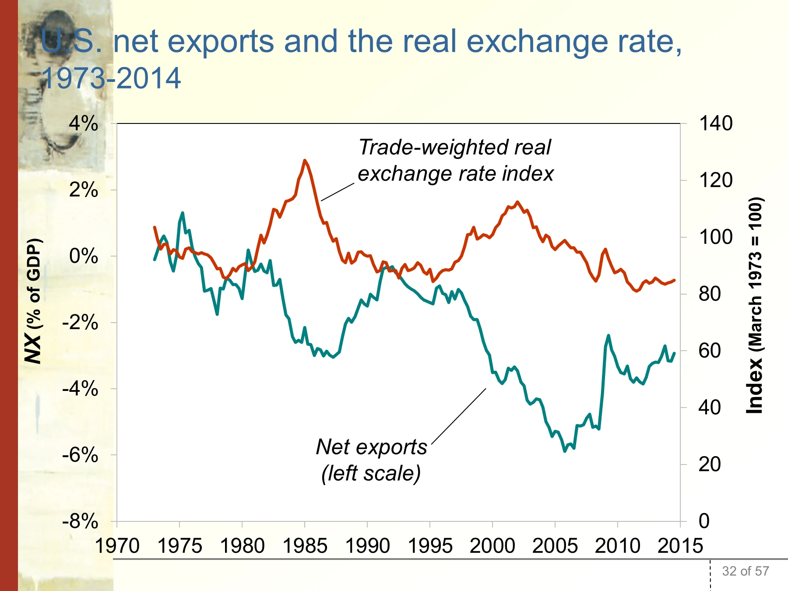
图中 左轴为净出口占 GDP 的百分比，右轴为贸易加权的实际汇率指数（1973 年 3 月 ＝ 100）；一条线为净出口，一条为实际汇率指数，二者大体反向。
把两条线放在一张图上，负相关看得出来：1980 年代前期实际汇率指数冲高，净出口跌到 GDP 的 −3% 左右；1980 年代后期美元回落，逆差收窄。2000 年代初又重复了一次，只是幅度更大。
相关性并不干净。有些年份汇率指数几乎不动，净出口却持续下滑——那些年美国的产出与进口需求在扩张，ε 不是唯一的推动力。图上无法区分「沿曲线移动」与「曲线本身在移动」。
这张图能支持的只是方向，不能支持斜率。要判断一次升值会让 NX 变化多少，需要估计进出口的价格弹性，那超出本章的模型范围。
The real exchange rate here is a broad index. Source: Federal Reserve Statistical Release H.10, Board of Governors.
http://www.federalreserve.gov/releases/h10/summary/indexbc_m.txt
NX as a percent of GDP was computed from NX and GDP source data from Department of Commerce, Bureau of Economic Analysis, obtained at: http://research.stlouisfed.org/fred2/
The RER data are monthly and the NX and Y data are quarterly, so the RER series shown in the graph is a quarterly series where each value is an average of the three monthly values from that quarter.
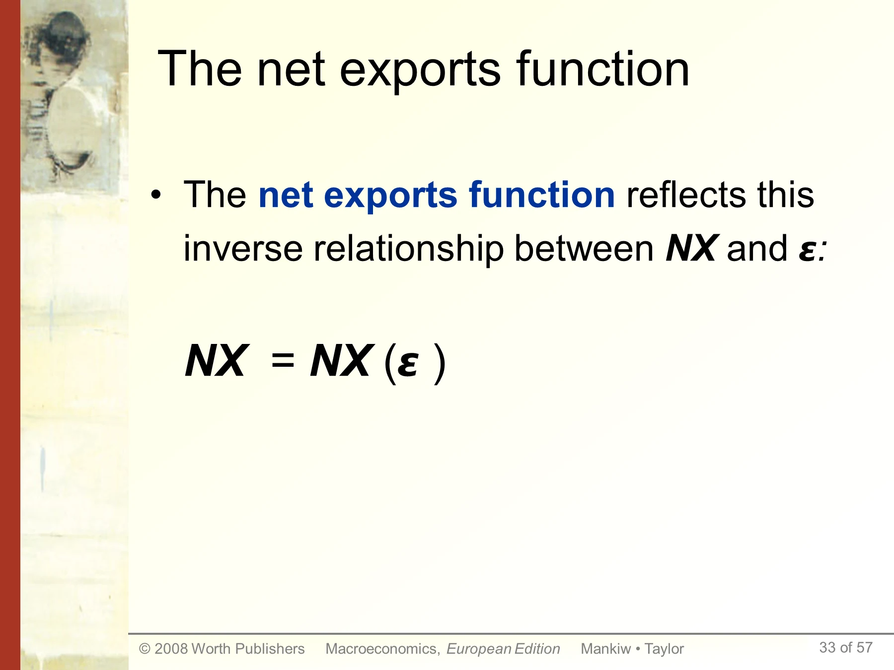
净出口函数刻画 NX 与 ε 之间的反向关系：
NX = NX(ε)这个记号只是把上一页的链条写成一个函数，但它做了一个不轻的约定：括号里只有 ε。也就是说，产出、外国产出、偏好、关税全被压在「其他条件不变」里，任何一项变动都会让函数本身改变，而不是沿函数移动。
把 NX 写成 ε 的函数，而不是 e 的函数，是刻意的。名义汇率可以因物价变动而被完全抵消，实际汇率不会。决定贸易量的是相对价格，不是货币价格，所以模型的这一端必须挂在 ε 上。
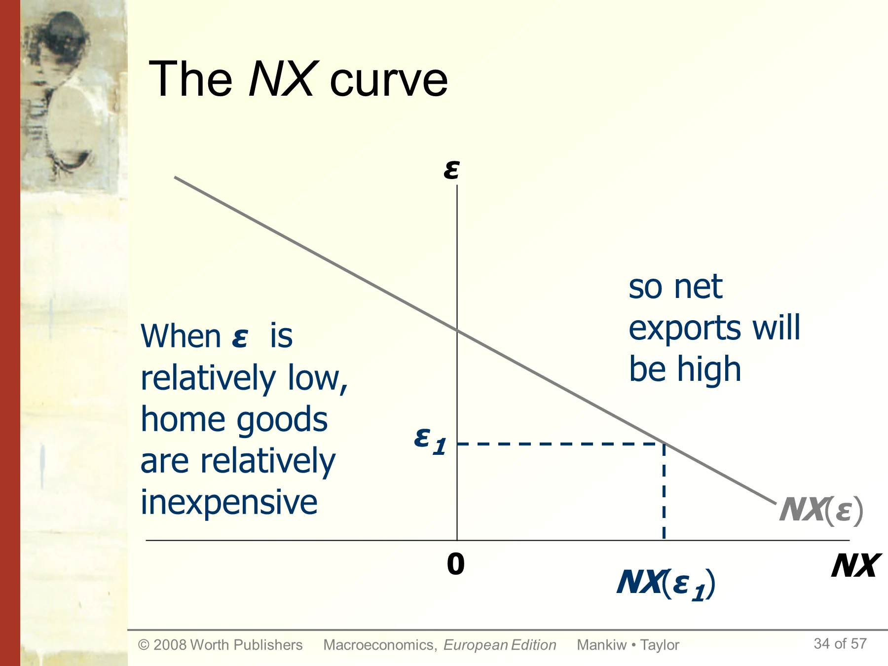
当 ε 相对较低时，本国商品相对便宜，所以净出口会较高。
图中 纵轴 ε，横轴 NX；曲线 NX(ε) 向下倾斜；在 ε1 处对应 NX(ε1)，位于横轴右侧。
纵轴放 ε、横轴放 NX，是一种不太常规的画法：价格在纵轴，数量在横轴，与微观的需求曲线一致。曲线向下倾斜，因为 ε 越低，本国货越便宜，出口越多、进口越少，NX 越大。
ε1 处 NX 为正，说明在这个相对价格上本国是顺差国。曲线在纵轴上的截距位置没有经济含义，它取决于其他条件；只有曲线的斜率和它的移动方向在模型里有作用。
横轴上的零点很重要：曲线穿过横轴的地方对应贸易平衡。零点右侧是顺差区，左侧是逆差区。这个交点随曲线的移动而移动。
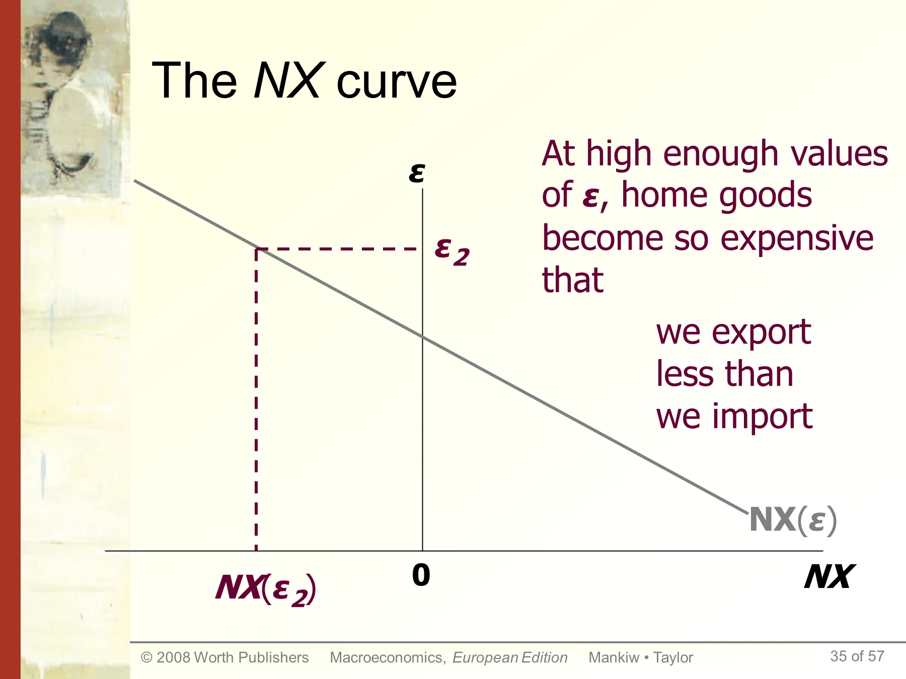
当 ε 高到一定程度，本国商品变得如此昂贵，以致于我们出口的比进口的少。
图中 同一坐标系，ε2 高于 ε1，对应 NX(ε2) 落在横轴左侧，为负值。
沿曲线向上走，ε 上升，NX 一路减小并穿过零点。零点左侧是逆差。这条曲线不保证 NX 一定为正，也不保证一定为负——符号完全由 ε 停在哪个位置决定。
曲线形状通常画成直线，但没有任何理由要求它是直的。真实的 NX(ε) 可能在某一段很陡（出口品缺乏替代品），在另一段很平（同质化商品，价格一变动贸易量就大幅调整）。形状影响政策效果的大小，不影响方向。
还有一点：曲线不能无限延伸。ε 极高时出口趋近于零，NX 趋近于 −IM，而不是负无穷；ε 极低时进口趋近于零，NX 趋近于 EX。两端都是水平渐近。
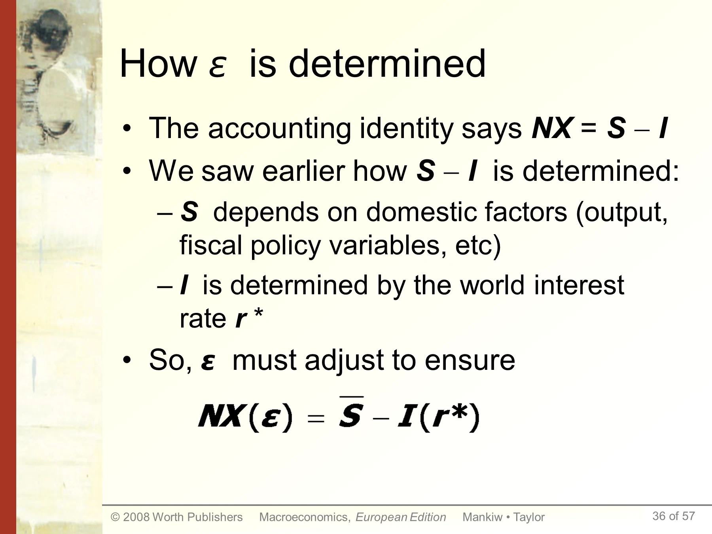
核算恒等式说 NX = S − I。
前面已经看到 S − I 如何决定：
所以，ε 必须调整到使下式成立：
NX(ε) = S − I(r*)这个方程是本章的第二次「一个方程一个未知数」，看清谁是未知数是全部关键。
右边 S − I(r*) 里没有任何 ε。S 由 Y、T、G 和消费偏好决定，I 由 r* 决定，r* 由世界市场决定。三个来源都与汇率无关。所以右边是一个已知数，由模型的其他部分先算出来。左边 NX(ε) 里 ε 是唯一的变量。于是整个方程变成：给定一个数，找出使 NX 等于这个数的 ε。
求解的方向因此是反向的。不是汇率决定贸易余额，而是贸易余额的目标值反过来决定汇率。NX 的均衡水平由储蓄与投资定死，汇率只是被派去实现这个水平的价格。这个方向与直觉相反：我们习惯说「汇率贬值改善贸易」，而模型说的是「要让贸易达到 S − I 的水平，汇率必须调到那个值」。
这也解释了为什么 ε 是被动变量。任何改变 S 或 I 的政策，都会先改变右边的数，然后迫使 ε 移动，NX 的最终变化完全由右边决定，与 ε 怎么动无关。汇率变动在这里是结果，不是原因。
唯一能让这个机制失灵的情形，是 NX 对 ε 完全没反应——曲线垂直。那时方程要么无解，要么 ε 必须跳到无穷。现实中 NX 有反应，所以总有解；但若反应很弱，同样的 S − I 变化就需要很大的汇率变动来实现，汇率会变得很波动。这正是弹性系数低的经济体汇率大起大落的一个解释。
如果误以为 ε 是外生、NX 是内生，整章的政策实验会全部算反：财政扩张会被读成「汇率不变、出口不变」，而实际是汇率升值、出口下降。
In the equation, ε is the only endogenous variable, hence this equation determines its value.
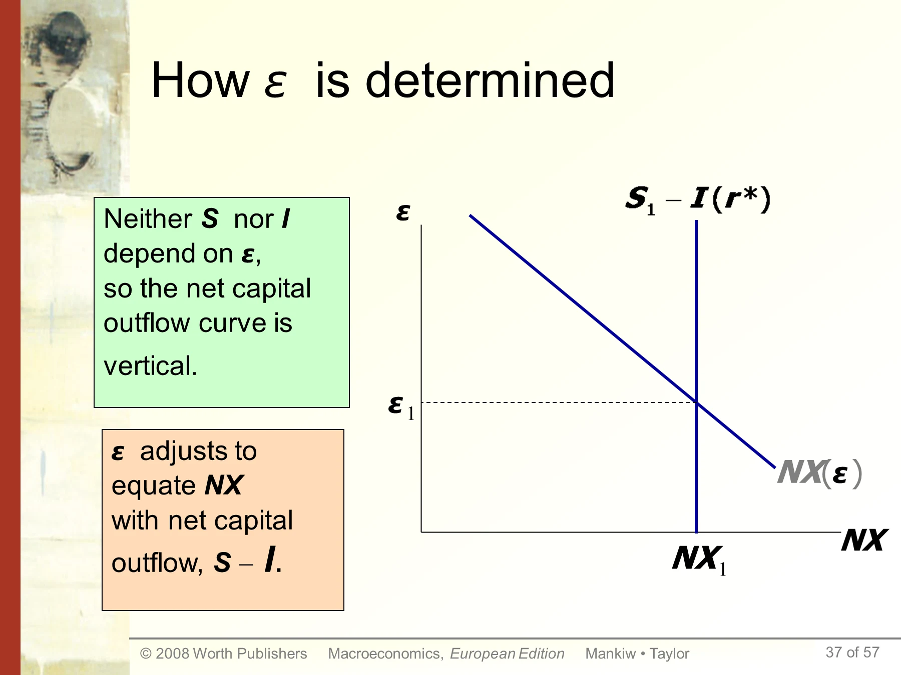
图中 纵轴 ε，横轴 NX；一条垂直直线标为 S − I，一条向下倾斜的曲线标为 NX(ε)；两线交点给出 ε1 与 NX1。
由于 S 与 I 都不取决于 ε，净资本流出曲线是垂直的。
ε 调整到使 NX 等于净资本流出 S − I。
把上一页的方程画出来，得到一张与常规供求图相反的图：供给是垂直的，需求向下倾斜，而价格在纵轴。
先说垂直线为什么垂直。S − I 是横轴上的一个数量，它由 Y、T、G、r* 决定，这四个量都与 ε 无关。改变 ε 不会让储蓄多一分、投资少一分，所以无论 ε 取什么值，S − I 都停在同一个横坐标上——一条竖线。
再说交点怎么读。垂直线钉住了横轴上的位置 NX1，NX(ε) 曲线向下倾斜，要让 NX 恰好等于 NX1，ε 只能取交点对应的 ε1。数量先定，价格后定。这是全章最反直觉的一步：汇率不是由外汇的供求「均衡」出来的价格，而是被数量差挤出来的清算价格。
为什么反直觉？因为我们习惯供需图里价格在纵轴、供给向上倾斜、需求向下倾斜，两者共同决定价格与数量。这里供给完全无弹性，价格的决定权就全部交给了需求曲线：给定数量，价格由需求曲线在该数量上的高度读出。凡是供给无弹性的市场，价格都是这样被「读出」的，而不是被「谈出」的，劳动力市场上的工资在某些情形下也类似。
交点的位置还有一个必须记住的性质：NX1 不一定等于零。垂直线落在横轴哪里，由 S − I 决定，没有任何机制把它推到零点。若 S > I，交点就在正半轴，该国长期顺差，ε 停在使出口多于进口的水平；若 S < I，交点就在负半轴，长期逆差。汇率调整的任务是让贸易余额等于资本流出，不是让它等于零。
这一点常被误读成「汇率总会回到贸易平衡」。不会。汇率的唯一职责是清算 S − I，而 S − I 本身可以长期不为零。
*** Note ***
At the lower left corner of this graph, NX does NOT NECESSARILY EQUAL ZERO!!!
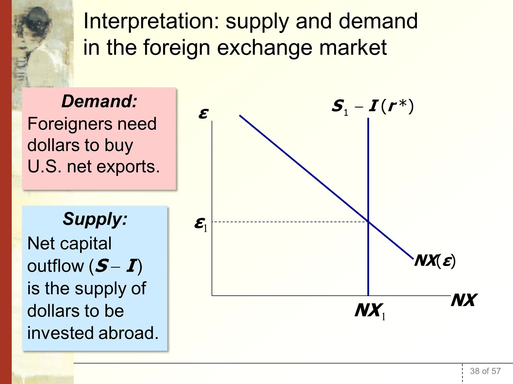
需求：外国人需要本币来购买本国的净出口。
供给：净资本流出（S − I）是供给到国外投资的本币数量。
图中 纵轴 ε，横轴 NX；NX(ε) 为向下倾斜的需求；垂直的 S − I 为供给；交点处 ε1、NX1。
同一张图可以换一套语言讲：把横轴读成本币数量，把曲线读成外汇市场上的供求。外国人买本国货，要用本币付款，所以 NX 是外国人对本币的净需求；本国人买外国资产，要把本币换成外币，所以 S − I 是本国对外币的净需求，等价于本币的净供给。
于是 ε 成了本币的价格。供给垂直，因为资本流出的量由储蓄与投资决定，不随汇率变动；需求向下倾斜，因为 ε 越高，本国货对外国人越贵，他们需要的本币越少。价格由交点定出。
这套说法只是把恒等式翻译了一遍，但很有用：它让「汇率升值」有了一个可叙述的机制——本币供给减少，价格上升。第 40 页的财政实验，用这套语言讲就是「英镑供给左移，英镑升值」。
这里被定价的是 ε 而不是 e，值得说明。若用 e 做纵轴，供给线同样垂直，需求曲线同样向下倾斜，交点给出的却是 e；但 e 还会被两国物价水平推动，而物价与贸易流量无关。用 ε 做价格，等于先把物价因素剔除，剩下的才是纯粹的相对价格，供求关系的形状才干净。
不要把这里的「本币需求」与第 4 章的货币需求混淆。那里是持有货币的意愿，取决于利率与收入；这里是换汇买货的需求，取决于汇率与贸易量。同理，「本币供给」不是货币供给量 M。
WARNING: Don’t let your students confuse the demand for dollars in the foreign exchange market with demand for real money balances (Chapter 4), or the supply of dollars in the foreign exchange market with the supply of money (Chapter 4).
If you and your students are as anal, er, I mean, as detail-oriented as me: NX is actually the net demand for dollars: foreign demand for dollars to purchase our exports minus our supply of dollars to purchase imports. Net capital outflow is the net supply of dollars: the supply of dollars from U.S. residents investing abroad minus the demand for dollars from foreigners buying U.S. assets.
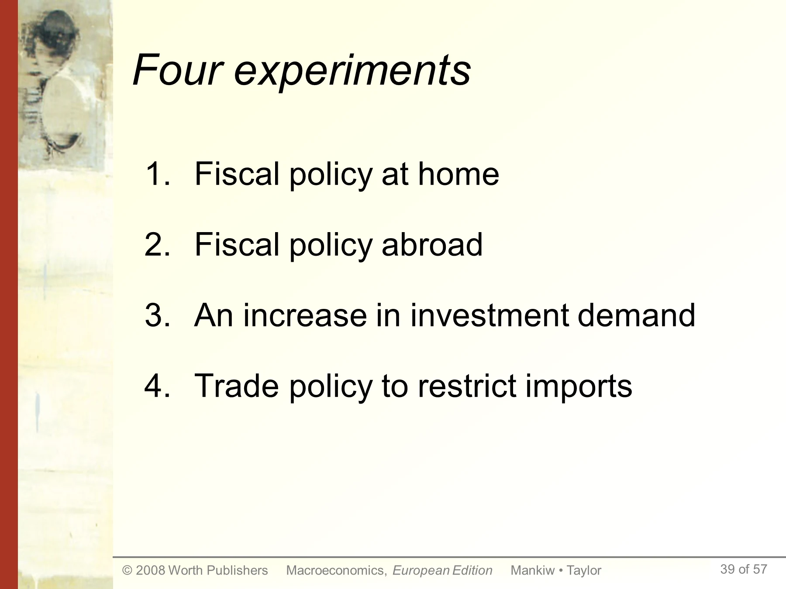
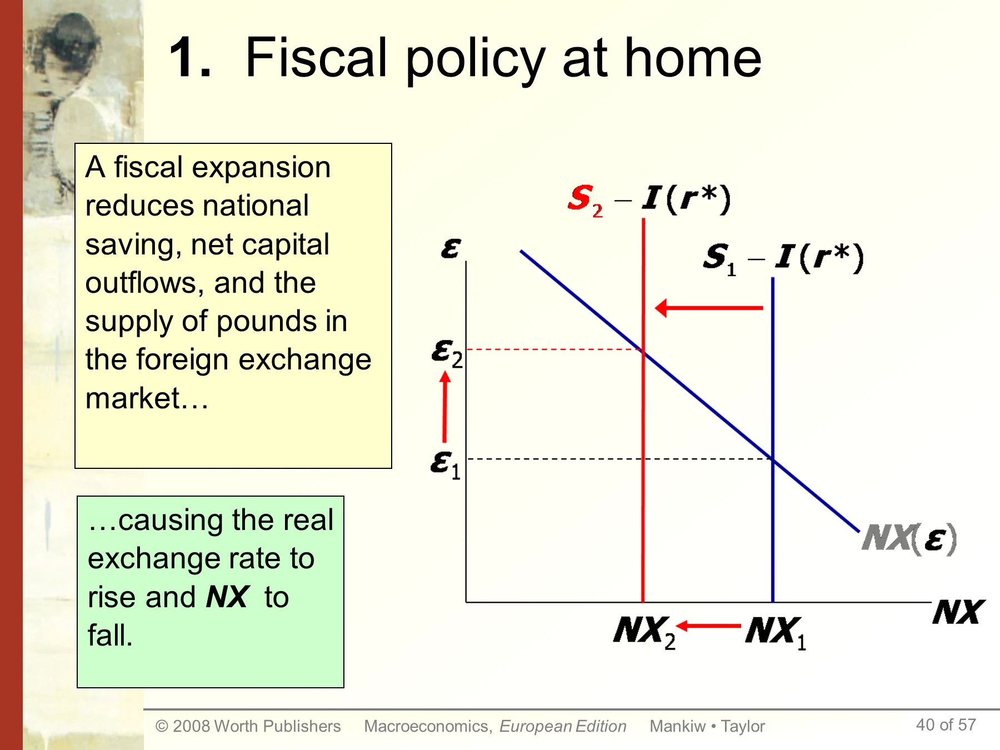
财政扩张减少国民储蓄、净资本流出，以及外汇市场上本币的供给……
……导致实际汇率上升、NX 下降。
图中 左图为可贷资金市场：储蓄线左移，r* 不动，S − I 缩小；右图为外汇市场：垂直的供给线左移，需求 NX(ε) 不动，ε 由 ε1 升至 ε2，NX 由 NX1 降至 NX2。
两个面板要连起来看，这是本章唯一一次把两个市场同时画在纸上。左图先动：G 上升或 T 下降，储蓄线左移，r* 不动，投资不动，S − I 缩短。右图接着动：垂直的供给线随 S − I 一起左移，需求曲线不动，交点沿需求曲线上移，ε 上升、NX 下降。
两图的连接点是同一个数：左图那段缩短的距离，就是右图供给线左移的幅度。所以 NX 的下降量在两张图上完全一致，不需要分别计算。
用汇率的语言复述一遍：财政扩张使本国可贷资金变紧，流出去买外国资产的钱变少，外汇市场上本币供给减少；本币变贵，ε 上升；本国货相对变贵，出口下降、进口上升，NX 回落。整条链条的起点是储蓄，终点是净出口，汇率只是中间的价格。
如果只看右图，会以为升值是原因、逆差是结果；把左图接上才看出两者是同一个冲击的两个环节。这也是为什么单靠汇率政策治不了贸易失衡——不改变 S − I，汇率调整只会改变 NX 的构成，改不了它的总量。
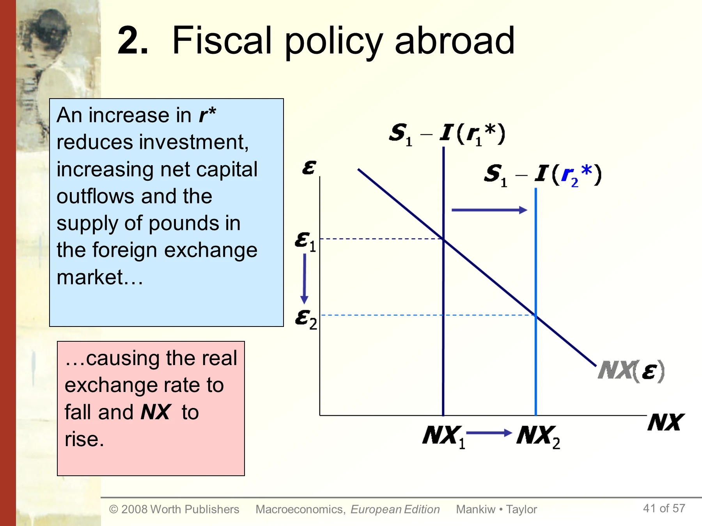
r* 上升减少投资，增加净资本流出与外汇市场上本币的供给……
……导致实际汇率下降、NX 上升。
图中 左图：r* 上移，投资沿曲线减少，S − I 扩大；右图：供给线右移，ε 由 ε1 降至 ε2，NX 上升。
起点在国外。外国财政扩张压低世界储蓄，r* 上升。左图里 r* 的水平线抬高，投资沿曲线减少，储蓄不动，S − I 变长。右图里供给线右移，沿需求曲线下移，ε 下降、NX 上升。
汇率的语言：本国投资减少，原本要投在国内的那部分资金转而去买外国资产，外汇市场上本币供给增加；本币变便宜，ε 下降；本国货相对便宜，出口上升、进口下降，NX 改善。
与上一个实验对照，两者都从 S − I 出发，方向相反。本国扩张缩短 S − I，本币升值、逆差扩大；外国扩张拉长 S − I，本币贬值、顺差扩大。同一国内的两件事——本国财政与外国财政——对贸易余额的作用正好相反，这是小国模型最容易被记混的一对结论。
现实含义：全球利率上行期，小型开放经济体往往同时看到本币走弱与贸易余额改善。这不是本国做对了什么，而是外部条件变了。
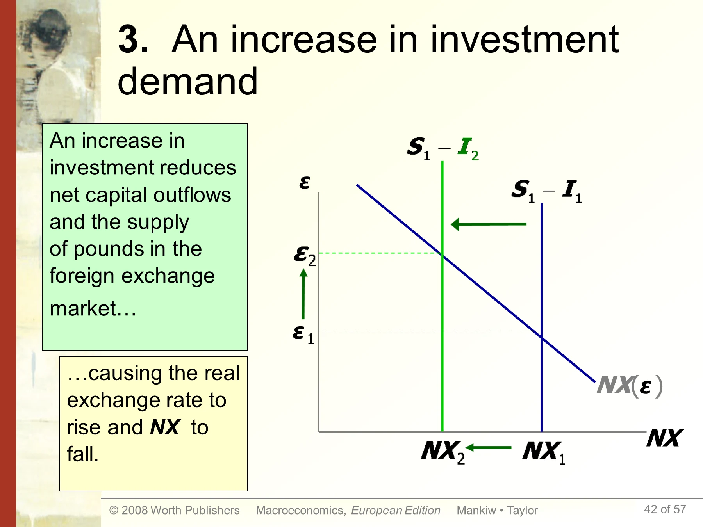
投资增加减少净资本流出与外汇市场上本币的供给……
……导致实际汇率上升、NX 下降。
图中 左图：投资曲线右移，r* 不动，I 增加，S − I 缩小；右图：供给线左移，ε 由 ε1 升至 ε2，NX 下降。
投资曲线右移，r* 不动，所以投资全额增加。储蓄不动，S − I 缩短同样的幅度。右图供给线左移，ε 上升，NX 下降。
结果与实验一相同，原因不同。财政扩张是储蓄减少，投资热潮是投资增加，两者都让 S − I 变小，汇率与贸易余额的反应一模一样。模型只认 S − I 这个数，不认它是怎么来的——这是恒等式的力量，也是它的局限：从结果反推原因，模型帮不上忙。
把三个实验排在一起看，规律就出来了：凡是缩短 S − I 的冲击，都让本币升值、NX 恶化；凡是拉长 S − I 的，都让本币贬值、NX 改善。储蓄与投资是唯一的两个旋钮，汇率与贸易余额是它们的结果。
图形上的连接点仍是同一个数。左图里 I 的增加量，就是右图里供给线左移的幅度，所以 ε 的上升幅度与 NX 的下降幅度都由 ΔI 一次决定，不必分两步算。这也解释了为什么投资热潮往往伴随本币走强：资金留在国内买机器，换成外汇去买外国资产的钱就少了。
政策上有一层含义。投资税收抵免这类鼓励投资的措施，会同时带来升值和逆差，但这是投资机会变多的副产品，不是竞争力下降的证据。把两者混为一谈，会得出「应该抑制投资以改善贸易」的荒谬结论。
Suggestion: Have your students do this experiment as an in-class exercise. Have them take out a piece of paper, draw the graph, then show what happens when there’s an increase in the country’s investment demand (perhaps in response to an investment tax credit).
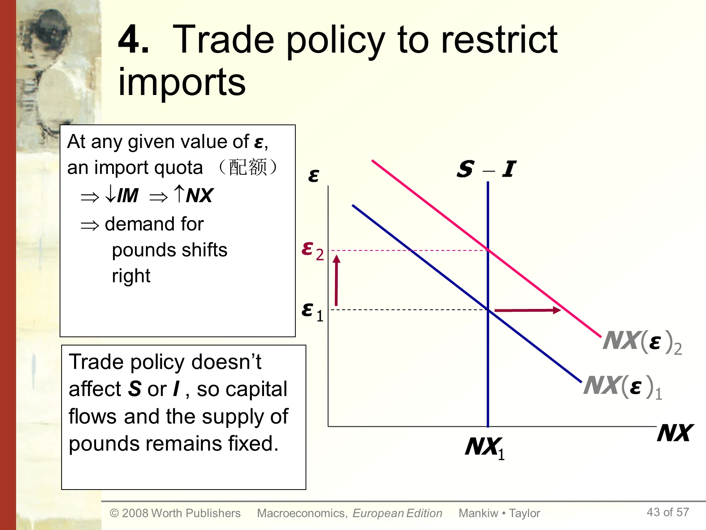
在任一给定的 ε 下，进口配额（quota）使 IM 下降、NX 上升，于是对本币的需求向右移动。
贸易政策不影响 S 或 I，所以资本流动与本币供给保持不变。
图中 纵轴 ε，横轴 NX；垂直的供给线 S − I 不动；需求曲线由 NX(ε)1 右移至 NX(ε)2；ε 由 ε1 升至 ε2，NX 仍为 NX1。
这个实验与前三个在结构上不同：动的不是供给，是需求。
配额或关税直接限制进口数量。在同一个 ε 上，进口少了，NX 就多了，所以整条 NX(ε) 曲线向右平移。注意是平移，不是沿线移动——政策改变的是「给定价格下愿意买多少外国货」，属于曲线的位置。
供给线不动。S − I 由 Y、T、G、r* 决定，配额不改变产出、不改变消费、不改变政府购买，也不改变投资（投资由 r* 决定）。所以垂直线原地不动，NX 的均衡水平被钉在 NX1。
需求右移，供给不动，交点只能沿垂直线向上走：ε 从 ε1 升到 ε2，NX 仍是 NX1。升值把需求曲线右移带来的贸易改善全部抵消掉了。贸易政策改变的是汇率，不是贸易余额。
抵消是怎么发生的？升值让本国货变贵，出口下降；出口下降多少，进口就必须再降多少，才能让 NX 回到原来的水平。所以最终进口比政策实施前还少，出口也比之前少，贸易总量萎缩而余额不变。这就是为什么配额常常既伤了出口部门，又没有改善逆差。
换个角度：贸易余额的规模由储蓄与投资决定，这是一个宏观约束，任何针对某几类商品的微观政策都动不了它。想减少逆差，得提高储蓄或降低投资，而不是堵住某几个港口。历史上多次关税战都验证了这一点——余额没变，贸易量下来了，双方都损失了比较利益。
如果政策同时影响了 S 或 I（比如关税收入改变了财政赤字，或不确定性压低了投资），NX 才会变。模型里这些渠道被假设不存在，所以结论才这么干净。
The analysis here applies for import restrictions (tariffs, quotas) as well as export subsidies.
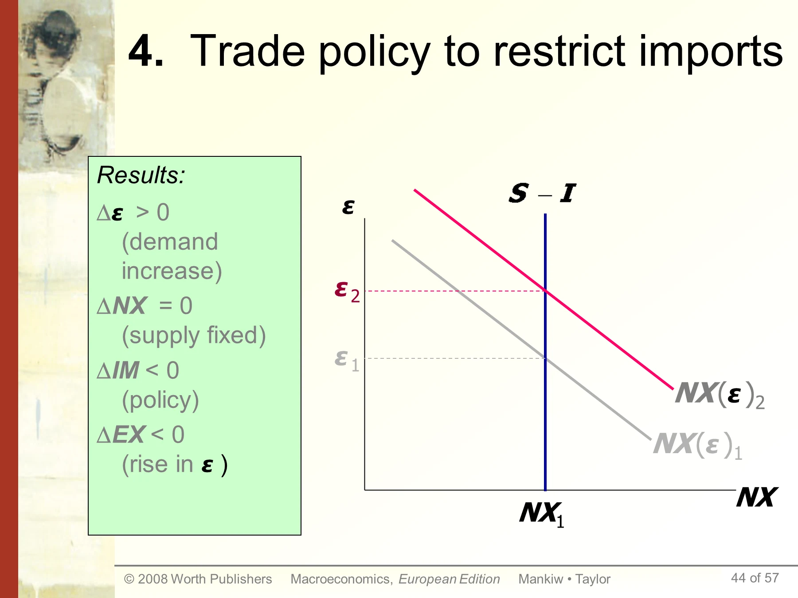
结果
图中 需求曲线右移，供给线垂直不动，ε1 → ε2，NX 保持在 NX1。
四条结果要连成一个闭环来读，缺一条就自相矛盾。
配额让进口下降，这是政策直接效果，ΔIM < 0。进口少了，NX 本该上升，于是对本国货的净需求增加，本币升值，Δε > 0。升值让出口变贵，ΔEX < 0。出口下降而 NX 不变，由 NX = EX − IM 可知进口必然再降一次——所以最终的进口降幅比政策最初造成的还要大。四条合起来才自洽。
关键的约束是 ΔNX = 0，它来自供给不变：S − I 没有动，NX 就不能动。贸易余额是宏观变量，由储蓄与投资决定，贸易政策只能在它的构成上做文章——把进口换成国内生产，代价是出口也萎缩，总贸易量下降。
实证上有一个干净的检验。美国 2017 与 2019 两年对多国多类商品加征关税，目标之一就是削减贸易逆差。两年下来，贸易逆差都停在 GDP 的 2.9%，没有变化；而贸易量的收缩带来的净损失估计为 72 亿美元。这与模型的预言一致：余额不动，贸易量下降，福利受损。
福利损失的来源不只是贸易量。配额把资源从效率高的出口部门赶到受保护的进口替代部门，同时抬高了国内价格，消费者剩余转移到生产者与配额持有者手里，净损失是那两块三角形。模型只讲余额，不讲效率，但余额不变这一点本身就足以否证「关税能治逆差」的政策叙事。
若配额针对的是资本品，长期可能压低 I，从而缩小 S − I、扩大顺差。这种间接渠道模型没写，但在现实中不可忽略。
In the text box, the remarks in parentheses after each result is an abbreviated explanation for that result.
The real exchange rate appreciates because the quota has raised the net demand for pounds associated with any given value of the exchange rate.
But the equilibrium level of net exports doesn’t change, because the supply of pounds in the foreign exchange market (S-I) has not been affected by the trade policy. (Remember, S = Y-C-G, and the trade policy does not affect Y, C, or G; the policy also does not affect I, because I = I(r*) and r* is exogenous.)
The appreciation causes exports to fall.
And, since exports are lower but NX is unchanged, it must be the case that IM is lower too, which is what you’d expect from a trade policy that restricts imports.
This example is a perfect time to analyze the trade policies of President Trump (Case Study in the text) on the trade deficit. President Trump placed tariffs on multiple goods from many countries. One goal of his was to reduce or eliminate the trade deficit. However in both 2017 and 2019 the trade deficit was 2.9% of GDP. Trump did not reduce the trade deficit, but the lower amount of trade resulted in a loss of 7.2 billion to the US economy (as found in Pablo D. Fajgelbaum, Pinelopi K. Goldberg, Patrick J. Kennedy, and Amit K. Khandelwal, “The Return to Protectionism,” The Quarterly Journal of Economics 135, no. 1 (February 2020): 1–55.)
The analysis here applies for import restrictions (tariffs, quotas, “Buy American” Provisions) as well as export subsidies. It also applies for exogenous changes in preferences regarding domestic versus foreign goods.
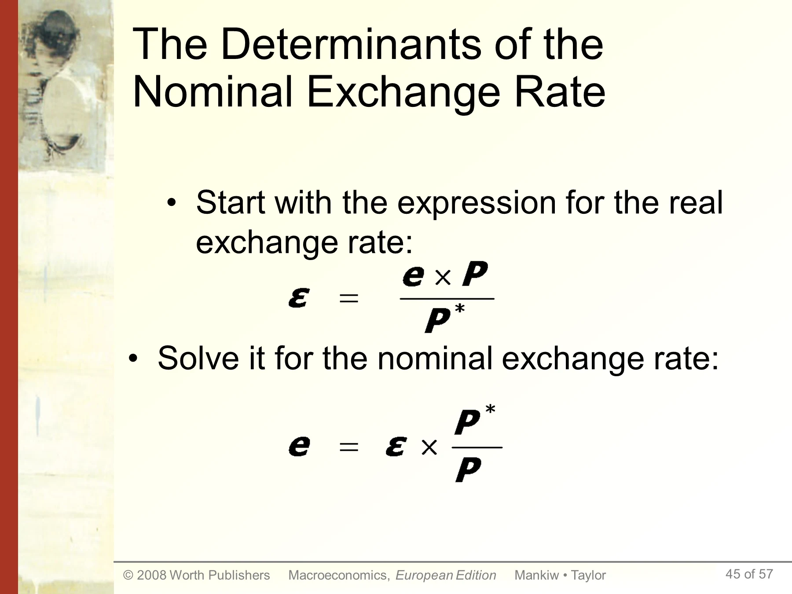
从实际汇率的表达式出发：
ε = e P / P*解出名义汇率：
e = ε P* / P只是移项，但方向很容易搞反。从 ε = eP/P* 出发，两边乘 P*，得 εP* = eP；两边除 P，得 e = εP*/P。检查一下单位：ε 无量纲，P* 是外币 / 篮子，P 是本币 / 篮子，相除得外币 / 本币，正是 e 的单位。单位对了，方向就对了。
用第 29 页的数字验算：ε = 1.5，P* = 48 日元，P = 0.60 欧元，则 e = 1.5 × 48 / 0.60 = 120 日元 / 欧元，与给定值一致。
这个式子的用处在于把一个复杂的对象拆成三块。名义汇率等于实际汇率乘以两国价格水平之比：ε 由储蓄与投资通过外汇市场决定，P 与 P* 由各自的货币供给与货币需求决定。三块各有各的理论，合起来才给出 e。
P 在分母上，所以本国物价上升会使 e 下降，即本币贬值。这与「通胀国货币贬值」的常识一致，但要注意它是通过 P 起作用的，不是通过 ε。
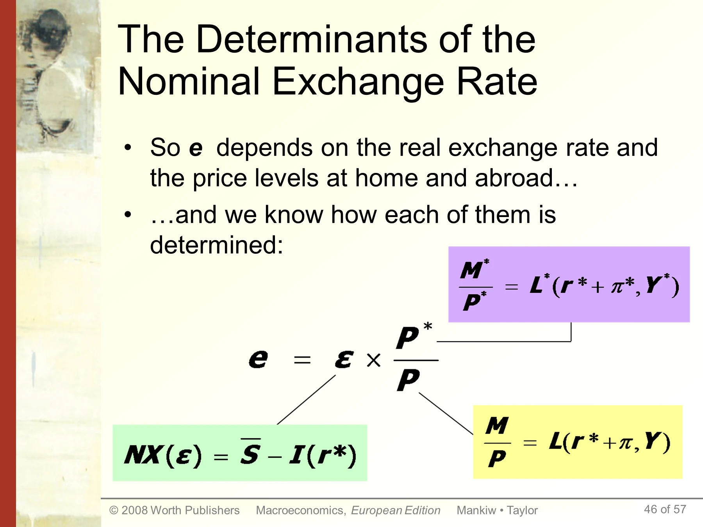
所以 e 取决于实际汇率以及本国与外国的价格水平……
……而我们已经知道它们各自如何决定：
三块拼图各自有归属。ε 是实际变量，由储蓄、投资与贸易偏好决定，与货币供给无关；P 是名义变量，长期由货币数量决定，第 5 章的结论在这里直接用；P* 对本国是外生给定的，本国政策改变不了它。
这个分解正好体现了古典二分法：实际汇率由实际因素决定，名义汇率再由实际汇率乘上两国物价之比。货币只影响名义变量，不影响实际汇率。本国货币供给翻倍，长期看 P 翻倍，e 减半，ε 纹丝不动，贸易余额也不变。
由此可以推出一个有用的判断：两国汇率长期走势的差异，主要来自通胀率的差异，而不是来自贸易余额的差异。贸易余额影响的是 ε，通胀影响的是 P*/P，两者通过不同的渠道作用于 e。
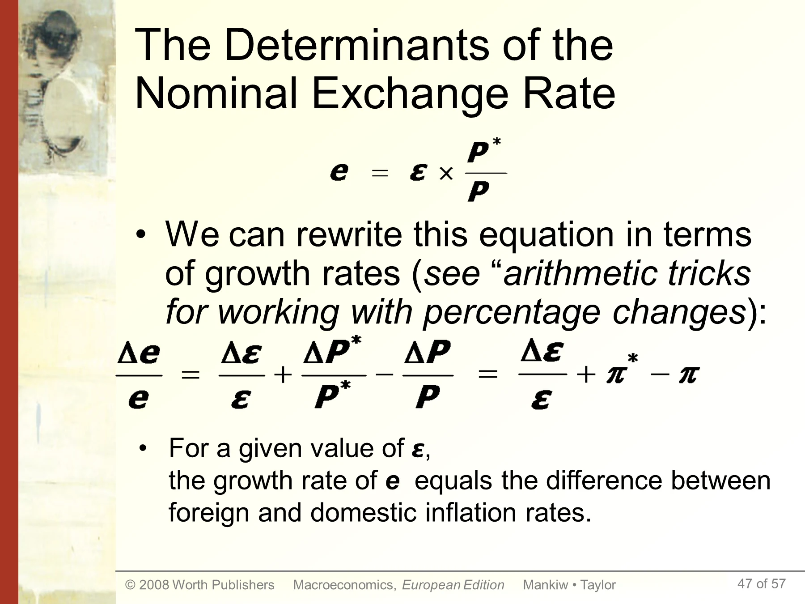
把上式改写成增长率的形式（参见「百分比变化的算术技巧」）：
%Δe = %Δε + π* − π给定 ε 的取值，e 的增长率等于外国与本国通货膨胀率之差。
乘积的增长率等于各因子增长率之和，这是百分比运算的基本技巧。e = ε · P*/P 取对数再差分，得 %Δe = %Δε + %ΔP* − %ΔP，其中 %ΔP = π，%ΔP* = π*。
若 ε 不变，%Δε = 0，式子简化为 %Δe = π* − π。本国的通胀每比外国高一个百分点，本币就多贬值一个百分点。举例：本国通胀 10%，外国 2%，则 e 每年下降 8%，本币每年贬值 8%。
这个式子还有一个等价说法：实际汇率不变时，名义汇率的变动恰好抵消两国物价的差异，本国商品的外币价格与外国商品的价格同步上涨。这正是相对购买力平价的表述，下一页的数据就是对它的检验。
反过来用也成立：若观察到某国名义汇率长期每年贬值 20%，而两国通胀差只有 5%，那么 ε 必然在持续下降，该国的实际汇率在贬值，贸易竞争力在改善。把名义变动拆成实际变动与通胀差两部分，是读汇率数据的标准动作。
这里用的是连续时间的近似。通胀率高时（比如年 100% 以上），加法近似误差变大，需要改用精确的比值形式 (1+π*)/(1+π)。
Here we again see the Classical Dichotomy in action. The real exchange rate is determined by real factors, and nominal variables only affect nominal variables.
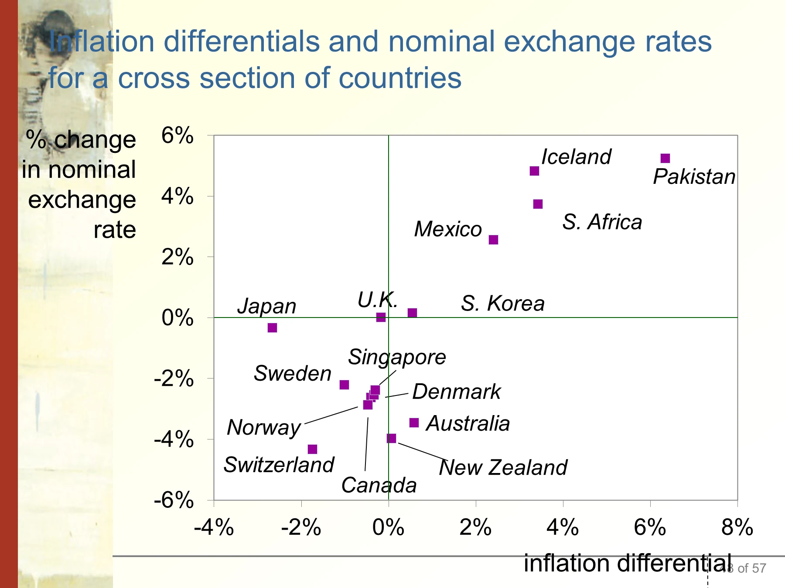
图中 横轴为一国通胀率减美国通胀率（百分点），纵轴为该国货币对美元名义汇率的年平均百分比变化（正值表示该国货币相对美元贬值）；散点大致沿一条正斜率的直线分布。
横轴是通胀差，纵轴是名义汇率的变动率，散点沿正斜率排开，与 %Δe = π* − π 的预言方向一致：通胀高于美国的国家，其货币相对美元贬值。斜率接近一，说明一价定律式的调整大体是一比一的。
纵轴的定义要看清：正值表示该国货币相对美元贬值，即美元对该货币升值。所以这张图的说法是「通胀越高的国家，其货币贬得越多」，与常识一致。
散布仍然明显。有的国家通胀差为正，汇率却几乎没动——那通常意味着资本管制或央行干预；有的偏离幅度达到每年十几个百分点，说明实际汇率在这段期间大幅变动。数据支持方向，不支持精确的数值预测。
Figure 6-13 on p. 164. The horizontal axis measures the country’s inflation rate minus the U.S. inflation rate. The vertical axis measures the percentage change in the U.S. dollar exchange rate with that country (positive values mean the country’s currency depreciates relative to the dollar). All variables are annual averages over the period 2001-2010.
This figure shows a positive relationship between the inflation differential and the rate of dollar appreciation: The higher a country’s inflation relative to U.S. inflation, the faster the U.S. dollar will appreciate against that country’s currency.
Source: International Financial Statistics
Note: Due to space constraints on this slide, Norway’s point is not labeled; it is virtually identical to Canada’s point.
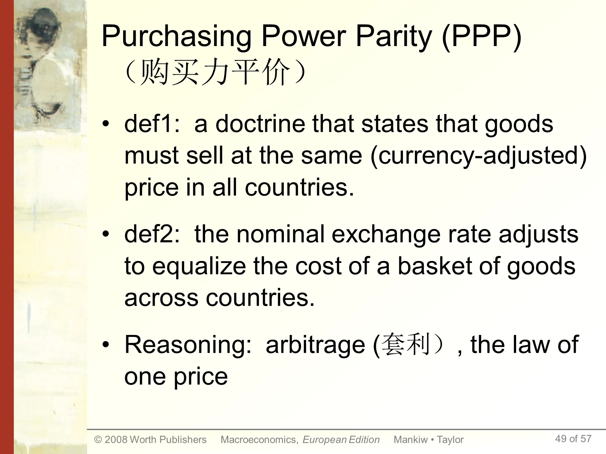
定义一：一种学说，认为商品在所有国家都必须以相同（经货币换算后）的价格出售。
定义二：名义汇率会调整到使一篮子商品在各国的成本相等。
推理依据：套利、一价定律。
两个定义说的是同一件事的两个层面。定义一讲的是商品价格，定义二讲的是汇率；前者是后者的理由，后者是前者的实现方式。
推理链条只有一环：一价定律。同一种商品在两地价格不同，就存在无风险利润——低价买进、高价卖出。只要运输成本和贸易壁垒可以忽略，套利会一直进行到价差消失。把这个逻辑套到一篮子商品上，就得到「同一篮子在各国的外币价格应当相等」。
这里已经埋了两个隐含前提：商品可以自由跨境，且两地卖的是同一种商品。第 53 页会说明这两条在现实中都不成立，PPP 因此只是一个基准，不是事实描述。
PPP 的用处不在于精确预测汇率，而在于提供一个「汇率应该是多少」的参照系。有了它，才能说某国货币被高估或低估，第 52 页的巨无霸指数就是这个思路的通俗版。
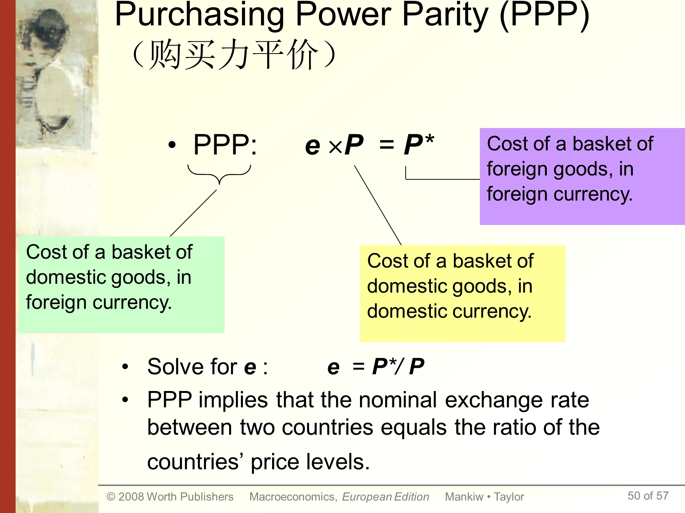
解出 e：
e = P* / PPPP 意味着两国之间的名义汇率等于两国价格水平之比。
eP 这一项值得单独看。P 是本国篮子的本币价格，乘上 e（外币 / 本币），得到的是同一个篮子的外币价格。PPP 说，这个外币价格应当等于外国篮子的外币价格 P*。两边单位都是「外币 / 篮子」，可以比较，这是等式成立的前提。
解出 e 就是 P*/P：名义汇率等于两国价格水平之比。这个结论很强——它说汇率完全由物价决定，与贸易余额、资本流动、利率都无关。若本国物价是外国的一倍，本币就该值外币的一半。
把它代回实际汇率的定义，ε = eP/P* = (P*/P)(P/P*) = 1。PPP 与实际汇率等于一是同一件事的两种说法。这一点在第 51 页会引出很强的图形结论。
注意这里的 P、P* 必须是同一篮子商品的价格。若本国用 CPI、外国用 GDP 平减指数，两者不可比，e = P*/P 也就失去意义。
PPP implies that the cost of a basket of goods (even a basket with just one good, like a Big Mac or a Mars bar) should be the same across countries.
e P = the foreign-currency cost of a basket of goods in the home country, while P* the cost of a basket of foreign goods.
PPP implies that the baskets cost the same in both countries: eP = P*,
which implies that e = P*/P.
若 e = P*/P，则
ε = 1于是 NX 曲线是水平的：
图中 纵轴 ε，横轴 NX；在 ε = 1 处一条水平线，标为 NX；垂直的 S − I 与它相交，交点决定 NX 的数量。
在 PPP 下，(S − I) 的变动对 ε 与 e 都没有影响。
水平线是怎么来的？如果各国商品完全替代，且套利没有障碍，那么 ε 哪怕只比 1 高一点点，买外国货卖到本国就有利可图，进口会急剧增加，NX 暴跌；ε 哪怕只低一点点，出口会急剧增加，NX 暴涨。需求曲线因此在 ε = 1 处变成水平：价格不能偏离 1，数量可以任意大。
图形上的后果很极端。供给线 S − I 仍然垂直，它与水平需求线的交点决定 NX 的数量，但 ε 被钉死在 1，无论 S − I 在哪里。储蓄上升、投资下降、财政扩张，全都只改变 NX 的数量，不改变汇率。
结论与供给无弹性的情形正好相反：那里价格由需求读出，这里价格由需求曲线的高度给定、数量由供给决定。两个极端之间，才是现实。
PPP 版本的好处是能解释长期趋势：两国通胀差多大，名义汇率就贬多少，ε 大致守在 1 附近。坏处是它无法解释中期的大幅偏离——1985 年美元对日元的高估、2010 年代日元的大幅贬值，在 PPP 框架下都成了「本该不发生」的事。
水平线也意味着模型对 NX 的规模没有任何约束：S − I 多大，NX 就多大，价格不动。这显然不现实，因为现实中要扩大出口就得降价。真实的需求曲线是向下倾斜的，PPP 只是它的极限情形。
Revisiting our model, this implies that the NX curve should be horizontal at 1.
Intuition for the horizontal NX curve: Under PPP, different countries’ goods are perfect substitutes, and international arbitrage is possible. If the relative price of home good fall even a tiny bit below 1, then there’s a profit opportunity: buy home goods and sell them abroad. Hence, the tiniest drop in the real exchange rate causes a massive increase in NX. Similarly, if the relative price of home goods rises even a tiny amount above 1, then it is profitable to buy foreign goods and sell them at home, so this arbitrage causes a massive increase in imports---and decrease in NX.
Thus, under PPP, the real exchange rate equals 1 regardless of net capital outflows S-I. Changes in S or I have no impact on the real exchange rate.
| 国家 / 地区 | 当地货币价格 | 折美元 | PPP 隐含汇率 | 实际汇率（7/25） | 高估 / 低估 % |
|---|---|---|---|---|---|
| 美国 | 5.74 美元 | $5.74 | — | — | — |
| 阿根廷 | 120 ARS | $2.87 | 20.91 | 41.80 | −50 |
| 澳大利亚 | 6.15 AUD | $4.26 | 1.07 | 1.44 | −25.8 |
| 阿塞拜疆 | 3.95 AZN | $2.33 | 0.69 | 1.70 | −59.4 |
| 巴林 | 1.4 BHD | $3.71 | 0.24 | 0.38 | −35.3 |
| 巴西 | 17.5 BRL | $4.60 | 3.05 | 3.81 | −19.9 |
| 英国 | 3.29 GBP | $4.10 | 0.57 | 0.80 | −28.5 |
| 加拿大 | 6.77 CAD | $5.16 | 1.18 | 1.31 | −10.2 |
| 智利 | 2640 CLP | $3.83 | 459.93 | 689.75 | −33.3 |
| 中国 | 21 CNY | $3.05 | 3.66 | 6.88 | −46.9 |
| 哥伦比亚 | 11900 COP | $3.69 | 2073.17 | 3227.00 | −35.8 |
| 哥斯达黎加 | 2290 CRC | $3.94 | 398.95 | 581.94 | −31.4 |
| 克罗地亚 | 22 HRK | $3.33 | 3.83 | 6.60 | −41.9 |
| 捷克 | 85 CZK | $3.73 | 14.81 | 22.80 | −35 |
| 丹麦 | 30 DKK | $4.50 | 5.23 | 6.66 | −21.5 |
| 埃及 | 42 EGP | $2.53 | 7.32 | 16.62 | −56 |
| 欧元区 | 4.08 EUR | $4.57 | 0.71 | 0.89 | −20.3 |
| 危地马拉 | 25 GTQ | $3.26 | 4.36 | 7.68 | −43.3 |
| 洪都拉斯 | 86 HNL | $3.51 | 14.98 | 24.48 | −38.8 |
表列为 2019 年 7 月巨无霸的当地货币价格（第 1 列）与按实际汇率（第 4 列）折算的美元价格（第 2 列）。美元价格可与美国均价 5.74 美元比较，差额（第 5 列）衡量当地货币对美元的高估（+）或低估（−）。PPP 隐含汇率（第 3 列）是使汉堡价格相等的假想汇率，可与第 4 列的实际汇率对照。
三列数字的关系值得手算一遍。以中国为例：巨无霸 21 元，实际汇率 6.88 元 / 美元，折成美元是 21/6.88 ≈ 3.05，比美国的 5.74 低 47%。若要两者相等，汇率应是 21/5.74 ≈ 3.66，这就是 PPP 隐含汇率。实际汇率 6.88 远高于它，说明人民币按汉堡价被低估。
表里十九个经济体，除美国外全部为负。这种系统性偏差不是巧合：汉堡价格里有一大块是不可贸易的投入——租金、工资、本地服务。穷国的这些投入便宜，汉堡自然便宜，与汇率是否失衡无关。这就是巴拉萨—萨缪尔森效应。
所以这张表能读出相对高低，读不出绝对失衡。用它判断「某货币被低估一半」，等于把发展水平的差异当成了汇率错配。
不成立，原因有二：
尽管如此，PPP 仍是一个有用的理论：
两个原因分别打断套利链条的不同环节。第一类是不可贸易品：理发、房租、医疗服务无法装船，价差再大也没人能把它们从便宜的地方运到贵的地方。这类商品在 CPI 里占很大比重，所以用 CPI 算的 PPP 天然有系统偏差。运输成本起同样作用，只是程度问题——大宗商品（黄金、原油）的 PPP 相当接近成立，正因为运输成本相对价值很低。
第二类更根本：即使能运，商品也不完全替代。德国车与日本车不是同一个东西，消费者愿意为品牌、性能付溢价，价差可以长期存在而不被套利抹平。这叫阿明顿效应，它意味着需求曲线是向下倾斜而不是水平的。
两条合起来，解释了为什么现实中的 ε 会长期偏离 1，且偏离幅度可以达到几十个百分点。PPP 不是一条定律，是一个基准：它告诉你汇率长期该往哪里走，不告诉你今年在哪。
「长期回归」这个说法有实证支持，但「长期」可能很长。对主要货币而言，偏离的半衰期估计在三到五年，意味着一次冲击后要十几年才消化掉大半。对高通胀国家，回归快得多，因为物价变动本身就在推动汇率。
| 变量 | 1970 年代 | 1980 年代 | 实际变化 |
|---|---|---|---|
| 政府赤字 G − T（占 GDP %） | 2.2 | 3.9 | 上升 |
| 国民储蓄 S（占 GDP %） | 19.6 | 17.4 | 下降 |
| 实际利率 r（%） | 1.1 | 6.3 | 大幅上升 |
| 投资 I（占 GDP %） | 19.9 | 19.4 | 略降 |
| 净出口 NX（占 GDP %） | −0.3 | −2.0 | 下降 |
| 实际汇率 ε（贸易加权指数） | 115.1 | 129.4 | 上升 |
表中 数据为十年平均值；除 r 与 ε 外均以占 GDP 的百分比表示，ε 为贸易加权指数。原页另以 h / i 标出封闭模型与小型开放模型对每一行的预测方向。
这六行数字是整章最好的检验场，因为它同时给了两个模型的预测和实际结果。
先看事实。赤字从 GDP 的 2.2% 升到 3.9%，储蓄从 19.6% 掉到 17.4%，降幅 2.2 个百分点。实际利率从 1.1% 跳到 6.3%，升了五个多百分点。投资只从 19.9% 降到 19.4%，几乎没动。净出口从 −0.3% 恶化到 −2.0%，实际汇率指数从 115.1 升到 129.4。
封闭模型的预测对了一半。它说储蓄会降、利率会升，两点都对，而且幅度不小。它还说投资会跟着储蓄一起降——因为利率上升挤出投资，S 降多少 I 就降多少。实际投资只降了 0.5 个百分点，远小于储蓄的 2.2。更根本的是，封闭模型里没有贸易余额和汇率这两个变量，它连问题都提不出来。
小型开放模型的预测也对了一半。它说 NX 会恶化、ε 会升值，两点都对，方向精准。它说利率和投资都不变——因为 r = r*，本国财政动不了世界利率。实际利率升了五个百分点，这一条彻底错了。
两个模型各错一半，错的地方正好互补。这说明美国既不是完全封闭，也不是价格接受者：它的借款规模大到足以推动世界利率，但又不是完全自给自足，资金可以跨境流动。真实情形落在两个极端之间，这就是下一页「大国开放经济」的由来。
顺带核对一下恒等式：1970 年代 S − I = 19.6 − 19.9 = −0.3，等于 NX；1980 年代 17.4 − 19.4 = −2.0，也等于 NX。记账是自洽的，所以问题不在数据，在模型。
还有一层：里根减税与军费扩张同时发生，Y 的路径也变了。模型把 Y 当外生，这里的「储蓄下降」既包含政策效应，也包含增长与人口结构的变化，不能全部记在赤字账上。
This is a continuation of the case study that began in Chapter 3 (both the textbook and the PowerPoint presentation). It is placed here to motivate the last topic of Chapter 6: the U.S. as a large open economy.
As we saw in Chapter 3, the closed economy model correctly predicted that national saving would fall and the interest rate would rise. But, the closed economy model predicted that investment would fall as much as saving; actually, investment fell by much less than saving. Also, the closed economy model by definition could not have predicted the effects on the trade balance or exchange rate.
The small open economy model correctly predicted what would happen to NX and the real exchange rate, but incorrectly predicted that the interest rate and investment would not change.
In order to explain the U.S. experience, we need to combine the insights of the closed & small open economy models.
Data: Decade averages; all except r and ε are expressed as a percent of GDP; ε is a trade-weighted index.
至此我们学了两个极端情形的长期模型：
像美国这样的大国开放经济，落在两个极端之间。
大国开放经济分析的结果，是封闭经济与小型开放经济两种结果的混合。
例如……
两个极端模型的差别只有一个参数：本国经济相对世界的大小。小国面对一条水平的世界资金供给曲线，利率外生；封闭经济面对一条垂直的约束，储蓄必须等于投资；大国面对一条向上倾斜的曲线，借得多利率就得付得高。
向上倾斜这一条改变了一切。本国财政扩张减少储蓄，一部分缺口由外资填补，一部分表现为利率上升；利率上升又挤掉一部分本国投资。于是投资下降，但降得没有封闭模型那么多；利率上升，但升得没有封闭模型那么高。贸易余额恶化，但幅度小于小国模型。
这个「中间情形」不是折中主义的托词，它有明确的结构：斜率越陡，越接近封闭；越平，越接近小国。美国的经济规模大到无法被世界资本市场当作价格接受者，斜率不可能平，所以它的财政政策会推动全球利率，也会被全球资金部分约束。
财政扩张使国民储蓄下降。其影响取决于开放程度：
| 封闭经济 | 大国开放经济 | 小型开放经济 | |
|---|---|---|---|
| 实际利率 r | 上升 | 上升，但幅度小于封闭经济 | 不变 |
| 投资 I | 下降 | 下降，但幅度小于封闭经济 | 不变 |
| 净出口 NX | 0（不变） | 下降，但幅度小于小型开放经济 | 下降 |
三列排开，中间一列每一格都是两端的加权平均，权重就是本国在世界资本市场上的份额。这不是文字上的调和，而是同一条向上倾斜的供给曲线在不同斜率下的解。
先看利率这一行。封闭经济里，储蓄减少必须由投资等量减少来吸收，全靠利率上升完成，所以升幅最大。小国里利率外生，一动不能动。大国居中：外资进来一部分，本国利率升一部分。
投资这一行跟着利率走。封闭经济里挤出最严重；小国里 r 不变，投资一分不减；大国介于其间。
净出口这一行是镜像。封闭经济里 NX 恒为零，没有调整余地，所以写「不变」；小国里 S − I 的缺口全部由贸易吸收，NX 降幅最大；大国里缺口一部分被外资填、一部分被投资下降填，剩下才落到 NX 上，所以降幅小于小国。
三行合起来看，就是「挤出」在三种环境里的分配问题：封闭经济全部挤投资，小国全部挤净出口，大国两边各挤一点。同一笔财政扩张，代价由谁承担，取决于经济开放到什么程度。
欧元区不能整体当作大国处理。成员国各有独立的财政政策，却没有独立的货币政策与汇率，财政扩张的溢出渠道与这里的设定不同。
We have now looked at the case of a closed economy and a small open economy. For a large open economy, such as the U.S., results are in between the results for the closed & small open cases. “Falls, but not as much as in small open economy” means a weighted average of “no change” and “falls”. In the case of the Eurozone it does not make sense to treat the area as a large open economy when we are talking of fiscal policy, since each country can run an independent fiscal policy.
这一章只做了一件事：把第 3 章那个封闭的可贷资金市场打开一个口子，看资金流出去之后产品市场怎么变。打开之后得到两条恒等式——NX = Y − (C + I + G) 与 NX = S − I——它们不依赖任何行为假设，因此在任何年份、任何国家都成立，也因此在任何情形下都不能单独用来推断因果。恒等式给出的是约束，不是解释。
解释来自两条曲线的形状。储蓄曲线垂直，因为 S = Y − C − G 里没有利率；投资曲线向下倾斜，但被 r* 钉在某一点；NX 曲线向下倾斜，因为 ε 上升让本国货变贵。三条曲线加上一条外生的世界利率，就把整个模型定死了：r* 定投资，储蓄与投资的差定净资本流出，净资本流出定 NX 的均衡水平，而 ε 只是被派去实现这个水平的价格。汇率在这个模型里从来不是原因，它是清算的结果。理解这一点，才能明白为什么贸易政策改变不了贸易余额，为什么财政扩张的代价落在出口部门而不是投资上。
模型的每一处锋利都来自一条可放松的假设。完全替代与完全流动给出 r = r*，一旦有风险溢价或资本管制，本国利率就会偏离世界利率；小国假设让 r* 外生，一旦经济大到能推动全球资金价格，财政扩张就会同时挤出投资和净出口，里根赤字的数据正是这种中间情形的样本。PPP 是另一端的极限：如果商品完全可贸易且完全替代，NX 曲线变成水平，汇率被钉在 1，S − I 的变动只改变贸易量。现实中不可贸易品、运输成本与产品差异让这条曲线保留斜率，于是 ε 有了活动空间。
剩下的是名义层面。e = εP*/P 把汇率拆成实际汇率与两国物价之比，长期看物价由货币决定，所以名义汇率的走势主要跟随通胀差，而实际汇率仍由储蓄与投资决定。这条分界线就是古典二分法在开放经济里的样子：货币改变以本币和外币标价的价格，改变不了本国商品能换多少外国商品。